Advanced models 2: multivariate and distributional models
This time
- Multivariate models: more than one outcome at once
- Distributional models: predicting σ, not just μ
- Mixed-effects location scale models (MELSM)
Multivariate models
Any model that has more than 1 DV. While common within SEM frameworks, multivariate models are not often used within standard linear modeling (outside of MANOVA), mostly because of computational difficulties.
When do you want to use multivariate models? All the time! Mediation, path models, distributional models, IRT models, parallel process MLMs, etc.
What are the advantages? One model instead of several, extra parameters (correlations between outcomes), and new questions.
We’ve already done one of these: the multinomial (categorical) logistic model.
Multivariate MLMs
mv.1 <-
brm(family = gaussian,
mvbind(CON, DAN) ~ 1 + time + (1 + time | ID),
prior = c(prior(normal(0, 1.5), class = Intercept),
prior(normal(0, 1.5), class = b),
prior(lkj(2), class = cor),
prior(lkj(2), class = rescor)),
iter = 4000, warmup = 1000, chains = 4, cores = 4,
file = "mv.1",
backend = "cmdstanr",
data = mlm)mv.1 summary
Family: MV(gaussian, gaussian)
Links: mu = identity
mu = identity
Formula: CON ~ 1 + time + (1 + time | ID)
DAN ~ 1 + time + (1 + time | ID)
Data: mlm (Number of observations: 225)
Draws: 4 chains, each with iter = 4000; warmup = 1000; thin = 1;
total post-warmup draws = 12000
Multilevel Hyperparameters:
~ID (Number of levels: 91)
Estimate Est.Error l-95% CI u-95% CI Rhat Bulk_ESS
sd(CON_Intercept) 0.06 0.01 0.04 0.07 1.00 3311
sd(CON_time) 0.00 0.00 0.00 0.01 1.01 1263
sd(DAN_Intercept) 0.04 0.01 0.03 0.05 1.00 3338
sd(DAN_time) 0.00 0.00 0.00 0.01 1.00 1251
cor(CON_Intercept,CON_time) -0.13 0.39 -0.77 0.71 1.00 8551
cor(DAN_Intercept,DAN_time) -0.04 0.40 -0.75 0.76 1.00 8662
Tail_ESS
sd(CON_Intercept) 5910
sd(CON_time) 2053
sd(DAN_Intercept) 4655
sd(DAN_time) 1592
cor(CON_Intercept,CON_time) 7060
cor(DAN_Intercept,DAN_time) 6679
Regression Coefficients:
Estimate Est.Error l-95% CI u-95% CI Rhat Bulk_ESS Tail_ESS
CON_Intercept 0.19 0.01 0.18 0.21 1.00 4963 6197
DAN_Intercept 0.20 0.01 0.19 0.22 1.00 5972 6183
CON_time -0.00 0.00 -0.01 0.00 1.00 12469 9551
DAN_time -0.01 0.00 -0.01 -0.00 1.00 11206 8955
Further Distributional Parameters:
Estimate Est.Error l-95% CI u-95% CI Rhat Bulk_ESS Tail_ESS
sigma_CON 0.05 0.00 0.04 0.05 1.00 3960 4254
sigma_DAN 0.05 0.00 0.04 0.06 1.00 3023 3456
Residual Correlations:
Estimate Est.Error l-95% CI u-95% CI Rhat Bulk_ESS Tail_ESS
rescor(CON,DAN) 0.12 0.09 -0.06 0.29 1.00 6267 6225
Draws were sampled using sample(hmc). For each parameter, Bulk_ESS
and Tail_ESS are effective sample size measures, and Rhat is the potential
scale reduction factor on split chains (at convergence, Rhat = 1).Between-person SD of CON slopes
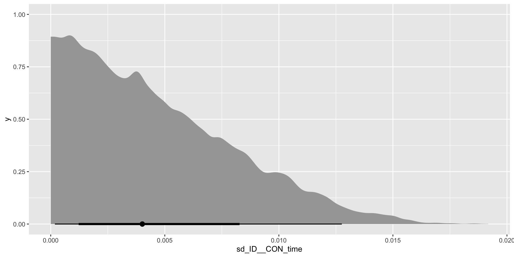
Correlation between slopes
Code
library(correlation)
CON_slope <- mv.1 %>%
spread_draws(r_ID__CON[ID,time]) %>%
filter(time == "time") %>%
group_by(ID) %>%
median_qi(r_ID__CON) %>%
select(ID, r_ID__CON)
DAN_slope <- mv.1 %>%
spread_draws(r_ID__DAN[ID,time]) %>%
filter(time == "time") %>%
group_by(ID) %>%
median_qi(r_ID__DAN) %>%
select(ID, r_ID__DAN)
slope_cor<- left_join(CON_slope,DAN_slope)
plot(cor_test(slope_cor, "r_ID__CON", "r_ID__DAN"))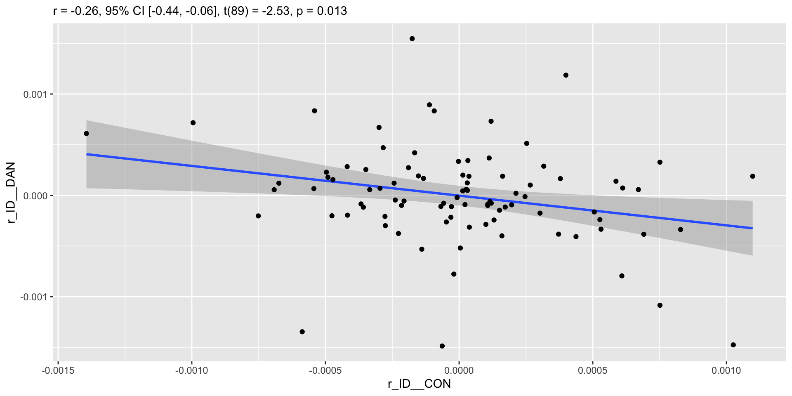
Let the model estimate the correlation
Correlating posterior medians treats shrunken point estimates as if they were data and throws away their uncertainty. Instead, give the two outcomes’ person effects a shared label (|p|) so they get one correlation matrix:
Code
mv.2 <-
brm(family = gaussian,
bf(mvbind(CON, DAN) ~ 1 + time + (1 + time |p| ID)) + set_rescor(TRUE),
prior = c(prior(normal(0, 1.5), class = Intercept),
prior(normal(0, 1.5), class = b),
prior(exponential(1), class = sd, resp = CON),
prior(exponential(1), class = sd, resp = DAN),
prior(lkj(2), class = cor),
prior(lkj(2), class = rescor)),
iter = 4000, warmup = 1000, chains = 4, cores = 4,
file = "mv.2",
backend = "cmdstanr",
data = mlm)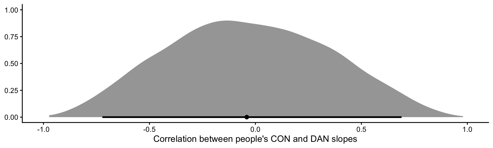
What the model says
mv.2 %>%
spread_draws(cor_ID__CON_time__DAN_time, cor_ID__CON_Intercept__DAN_Intercept) %>%
median_qi(.width = .95) %>%
select(-.width, -.point, -.interval) %>%
pivot_longer(everything()) %>%
mutate(value = round(value, 2))# A tibble: 6 × 2
name value
<chr> <dbl>
1 cor_ID__CON_time__DAN_time -0.04
2 cor_ID__CON_time__DAN_time.lower -0.72
3 cor_ID__CON_time__DAN_time.upper 0.69
4 cor_ID__CON_Intercept__DAN_Intercept 0.4
5 cor_ID__CON_Intercept__DAN_Intercept.lower 0.08
6 cor_ID__CON_Intercept__DAN_Intercept.upper 0.66- People with higher CON also tend to have higher DAN (intercept correlation ≈ .4, interval above 0).
- But the slope correlation is anywhere from about −.7 to .7: with 2–4 scans per person, the data can’t tell us whether people who change on one network change on the other. The plot of median slopes looked much more certain than it should.
Everything is SEM
Structural equation modeling (SEM) is the most popular way to handle multiple DVs. SEM is also known as covariance structure analysis, which really means unstandardized correlations. We can fit some simple SEM models using brms!
Also, SEM is really regression but a broader form. Also SEM can be equivalent to MLM in many respects.
Correlations (as multivariate models)
mv.1c <-
brm(family = gaussian,
bf(mvbind(CON, DAN) ~ 1) +
set_rescor(TRUE),
prior = c(prior(normal(0, 1.5), class = Intercept, resp = CON),
prior(normal(0, 1.5), class = Intercept, resp = DAN),
prior(normal(0, 1.5), class = sigma, resp = CON),
prior(normal(0, 1.5), class = sigma, resp = DAN),
prior(lkj(2), class = rescor)),
iter = 4000, warmup = 1000, chains = 4, cores = 4,
file = "mv.1c",
backend = "cmdstanr",
data = mlm)A correlation as a model
Family: MV(gaussian, gaussian)
Links: mu = identity
mu = identity
Formula: CON ~ 1
DAN ~ 1
Data: mlm (Number of observations: 225)
Draws: 4 chains, each with iter = 4000; warmup = 1000; thin = 1;
total post-warmup draws = 12000
Regression Coefficients:
Estimate Est.Error l-95% CI u-95% CI Rhat Bulk_ESS Tail_ESS
CON_Intercept 0.19 0.00 0.18 0.20 1.00 14221 9407
DAN_Intercept 0.19 0.00 0.19 0.20 1.00 14751 9858
Further Distributional Parameters:
Estimate Est.Error l-95% CI u-95% CI Rhat Bulk_ESS Tail_ESS
sigma_CON 0.07 0.00 0.07 0.08 1.00 13223 9261
sigma_DAN 0.06 0.00 0.06 0.07 1.00 12133 8678
Residual Correlations:
Estimate Est.Error l-95% CI u-95% CI Rhat Bulk_ESS Tail_ESS
rescor(CON,DAN) 0.26 0.06 0.14 0.38 1.00 11233 9221
Draws were sampled using sample(hmc). For each parameter, Bulk_ESS
and Tail_ESS are effective sample size measures, and Rhat is the potential
scale reduction factor on split chains (at convergence, Rhat = 1).The posterior correlation
# A tibble: 1 × 6
rescor__CON__DAN .lower .upper .width .point .interval
<dbl> <dbl> <dbl> <dbl> <chr> <chr>
1 0.261 0.136 0.377 0.95 mean qi A robust correlation
Make it robust
mv.1cr <-
brm(family = student,
bf(mvbind(CON, DAN) ~ 1) +
set_rescor(TRUE),
prior = c(prior(gamma(2, .1), class = nu),
prior(normal(0, 1.5), class = Intercept, resp = CON),
prior(normal(0, 1.5), class = Intercept, resp = DAN),
prior(normal(0, 1.5), class = sigma, resp = CON),
prior(normal(0, 1.5), class = sigma, resp = DAN),
prior(lkj(2), class = rescor)),
iter = 4000, warmup = 1000, chains = 4, cores = 4,
file = "mv.1cr",
backend = "cmdstanr",
data = mlm)mv.1cr summary
Family: MV(student, student)
Links: mu = identity
mu = identity
Formula: CON ~ 1
DAN ~ 1
Data: mlm (Number of observations: 225)
Draws: 4 chains, each with iter = 4000; warmup = 1000; thin = 1;
total post-warmup draws = 12000
Regression Coefficients:
Estimate Est.Error l-95% CI u-95% CI Rhat Bulk_ESS Tail_ESS
CON_Intercept 0.19 0.00 0.18 0.20 1.00 14928 10027
DAN_Intercept 0.19 0.00 0.18 0.20 1.00 15145 9848
Further Distributional Parameters:
Estimate Est.Error l-95% CI u-95% CI Rhat Bulk_ESS Tail_ESS
sigma_CON 0.07 0.00 0.06 0.08 1.00 11330 9300
sigma_DAN 0.06 0.00 0.05 0.07 1.00 11958 9720
nu 20.92 11.09 7.98 50.59 1.00 11030 9238
nu_CON 1.00 0.00 1.00 1.00 NA NA NA
nu_DAN 1.00 0.00 1.00 1.00 NA NA NA
Residual Correlations:
Estimate Est.Error l-95% CI u-95% CI Rhat Bulk_ESS Tail_ESS
rescor(CON,DAN) 0.25 0.07 0.12 0.38 1.00 11966 8976
Draws were sampled using sample(hmc). For each parameter, Bulk_ESS
and Tail_ESS are effective sample size measures, and Rhat is the potential
scale reduction factor on split chains (at convergence, Rhat = 1).Gaussian vs. robust correlation
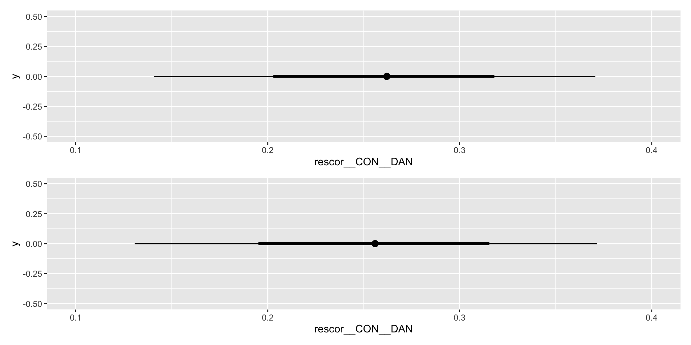
Residual correlations
Residual correlations are useful because they can be conceptualized as what is left over in the DV after accounting for your predictors, i.e., the association between the DVs controlling/adjusting for the predictors.
Writing several regressions as one model (bf() + bf()) is also how brms fits path models, including mediation: the mediator is an outcome in one formula and a predictor in another, and indirect effects are products of coefficients, computed draw by draw.
Distributional Models
In basic regression with a Gaussian DV, we predict the mean, \(\mu\), through some linear model. The second parameter of the normal distribution – the residual standard deviation \(\sigma\) – is assumed to be constant across observations. We estimate it but do not predict it.
This extends beyond Gaussian DVs, as most response distributions have a “location” parameter and one or more “scale” or “shape” parameters (remember negative binomial?). Instead of only predicting the location parameters, we can also predict the scale parameters.
The model
\[y_{i} \sim \text{Normal}(\mu_{i}, \sigma_{i})\] \[\mu_{i} = \beta_0 + \beta_1 \text{Group}_{i}\] \[\log(\sigma_{i}) = \gamma_0 + \gamma_1 \text{Group}_{i}\]
brms models \(\sigma\) on the log scale by default, so it can never go below 0. Exponentiate to get back to SDs.
Means and SDs by group
d.1a summary
Family: student
Links: mu = identity; sigma = log
Formula: CON ~ 0 + group
sigma ~ 0 + group
Data: mlm (Number of observations: 225)
Draws: 4 chains, each with iter = 2000; warmup = 1000; thin = 1;
total post-warmup draws = 4000
Regression Coefficients:
Estimate Est.Error l-95% CI u-95% CI Rhat Bulk_ESS Tail_ESS
groupCTRL 0.20 0.01 0.19 0.22 1.00 4510 3004
groupPD 0.18 0.01 0.17 0.20 1.00 5050 3117
sigma_groupCTRL -2.88 0.11 -3.09 -2.67 1.00 3349 2641
sigma_groupPD -2.64 0.07 -2.78 -2.50 1.00 3345 2525
Further Distributional Parameters:
Estimate Est.Error l-95% CI u-95% CI Rhat Bulk_ESS Tail_ESS
nu 19.09 11.60 5.80 50.55 1.00 2877 2692
Draws were sampled using sample(hmc). For each parameter, Bulk_ESS
and Tail_ESS are effective sample size measures, and Rhat is the potential
scale reduction factor on split chains (at convergence, Rhat = 1).Intercept + difference coding
d.1b summary
Family: gaussian
Links: mu = identity; sigma = log
Formula: CON ~ 1 + group
sigma ~ 1 + group
Data: mlm (Number of observations: 225)
Draws: 4 chains, each with iter = 2000; warmup = 1000; thin = 1;
total post-warmup draws = 4000
Regression Coefficients:
Estimate Est.Error l-95% CI u-95% CI Rhat Bulk_ESS Tail_ESS
Intercept 0.20 0.01 0.19 0.22 1.00 5198 2931
sigma_Intercept -2.80 0.09 -2.97 -2.62 1.00 4068 2672
groupPD -0.02 0.01 -0.04 0.00 1.00 4180 3076
sigma_groupPD 0.25 0.11 0.03 0.45 1.00 4273 3150
Draws were sampled using sample(hmc). For each parameter, Bulk_ESS
and Tail_ESS are effective sample size measures, and Rhat is the potential
scale reduction factor on split chains (at convergence, Rhat = 1).Adding education to sigma
d.2 summary
Family: gaussian
Links: mu = identity; sigma = log
Formula: CON ~ 1 + group
sigma ~ 1 + group * Education
Data: mlm (Number of observations: 225)
Draws: 4 chains, each with iter = 2000; warmup = 1000; thin = 1;
total post-warmup draws = 4000
Regression Coefficients:
Estimate Est.Error l-95% CI u-95% CI Rhat Bulk_ESS
Intercept 0.20 0.01 0.19 0.22 1.00 3084
sigma_Intercept -3.27 0.45 -4.17 -2.38 1.00 1393
groupPD -0.02 0.01 -0.04 0.00 1.00 2575
sigma_groupPD 0.04 0.58 -1.11 1.17 1.00 1155
sigma_Education 0.03 0.03 -0.03 0.09 1.00 1428
sigma_groupPD:Education 0.01 0.04 -0.06 0.09 1.00 1161
Tail_ESS
Intercept 2858
sigma_Intercept 2020
groupPD 2159
sigma_groupPD 1721
sigma_Education 2175
sigma_groupPD:Education 1722
Draws were sampled using sample(hmc). For each parameter, Bulk_ESS
and Tail_ESS are effective sample size measures, and Rhat is the potential
scale reduction factor on split chains (at convergence, Rhat = 1).Group SDs (log scale)
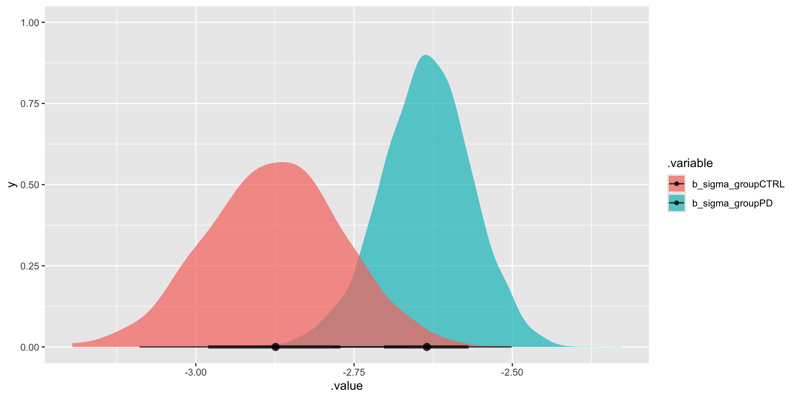
Group SDs
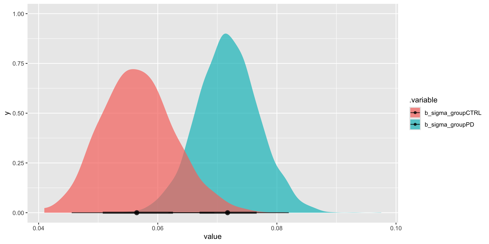
Means and spread together
But these are estimates of the parameter, not spread in the groups. Can we have a plot that includes variances and means?
Predicted CON by group
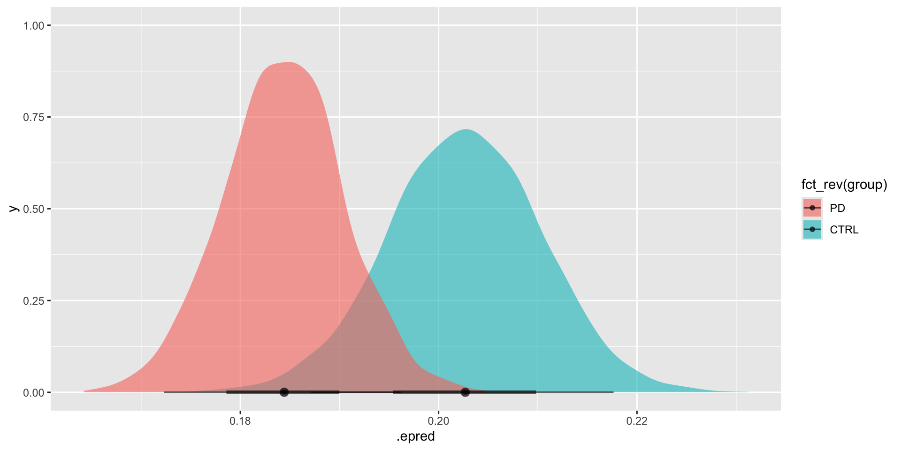
Reading sigma coefficients
Because sigma is on the log scale, exp() of a sigma coefficient is a ratio of SDs. From d.1b (control is the reference group):
as_draws_df(d.1b) %>%
mutate(sd_ratio_PD_vs_CTRL = exp(b_sigma_groupPD)) %>%
median_qi(sd_ratio_PD_vs_CTRL)# A tibble: 1 × 6
sd_ratio_PD_vs_CTRL .lower .upper .width .point .interval
<dbl> <dbl> <dbl> <dbl> <chr> <chr>
1 1.28 1.03 1.57 0.95 median qi People with PD vary about 1.3 times as much in CON as controls do.
Is the distributional model worth it?
Compare it with a model that has one sigma for everyone:
Code
elpd_diff se_diff
d.1b 0.0 0.0
d.0 -1.5 2.4 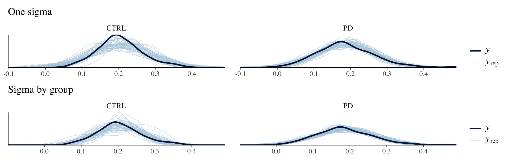
The SD ratio’s interval excludes 1, but LOO barely prefers the distributional model (a small difference relative to its SE). A real but small difference in spread doesn’t change predictions much. Whether you care depends on the question: if the spread itself is the hypothesis, model it.
Distributional MLMs

A standard MLM first
standard MLM
Code
melsm.1 <-
brm(family = gaussian,
N_A.std ~ 1 + day01 + (1 + day01 | record_id),
prior = c(prior(normal(0, 0.2), class = Intercept),
prior(normal(0, 1), class = b),
prior(exponential(1), class = sd),
prior(exponential(1), class = sigma),
prior(lkj(2), class = cor)),
iter = 3000, warmup = 1000, chains = 4, cores = 4,
data = melsm,
backend = "cmdstanr",
file = "melsm.1")melsm.1 summary
Family: gaussian
Links: mu = identity
Formula: N_A.std ~ 1 + day01 + (1 + day01 | record_id)
Data: melsm (Number of observations: 13033)
Draws: 4 chains, each with iter = 3000; warmup = 1000; thin = 1;
total post-warmup draws = 8000
Multilevel Hyperparameters:
~record_id (Number of levels: 193)
Estimate Est.Error l-95% CI u-95% CI Rhat Bulk_ESS
sd(Intercept) 0.77 0.04 0.70 0.86 1.00 1559
sd(day01) 0.65 0.05 0.57 0.74 1.00 3123
cor(Intercept,day01) -0.34 0.08 -0.49 -0.19 1.00 2908
Tail_ESS
sd(Intercept) 2797
sd(day01) 5013
cor(Intercept,day01) 4769
Regression Coefficients:
Estimate Est.Error l-95% CI u-95% CI Rhat Bulk_ESS Tail_ESS
Intercept 0.03 0.06 -0.08 0.14 1.01 711 1390
day01 -0.16 0.06 -0.27 -0.05 1.00 2501 4239
Further Distributional Parameters:
Estimate Est.Error l-95% CI u-95% CI Rhat Bulk_ESS Tail_ESS
sigma 0.61 0.00 0.60 0.62 1.00 13505 5554
Draws were sampled using sample(hmc). For each parameter, Bulk_ESS
and Tail_ESS are effective sample size measures, and Rhat is the potential
scale reduction factor on split chains (at convergence, Rhat = 1).MLM assumptions
Sigma captures the variation in NA not accounted for by the intercepts, the time slopes and their correlation. The standard MLM assumes sigma does NOT vary across persons, occasions, or other variables.
Posterior predictive interval is the same across people even though it seems inappropriate from person to person
Same prediction interval for everyone
Code
newd <-
melsm %>%
filter(record_id %in% c(30, 115)) %>%
select(record_id, N_A.std, day01)
fits <- newd %>%
add_epred_draws(melsm.1)
preds <- newd %>%
add_predicted_draws(melsm.1)
fits %>%
ggplot(aes(x = day01, y = N_A.std)) +
stat_lineribbon(aes(y = .epred),.width = c(.95), alpha = 1/4, color ="grey") +
stat_lineribbon(data = preds, aes(y = .prediction),.width = c(.90), alpha = 1/4, color ="blue") +
geom_point(data = newd) +
facet_wrap(~record_id)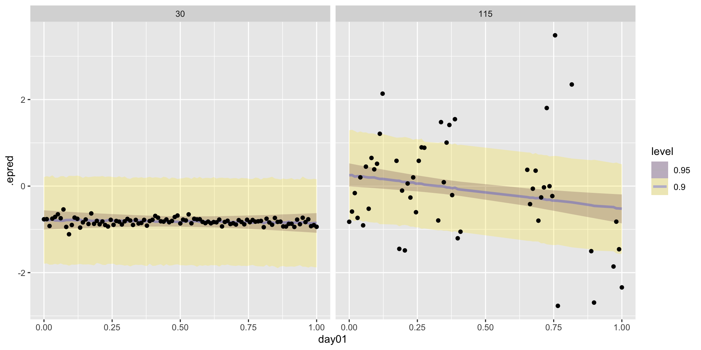
The MELSM
\[ \begin{aligned} NA_{ij} &\sim \operatorname{Normal}(\mu_{ij}, \sigma_{i}) \\ \mu_{ij} &= \beta_0 + \beta_1 \text{time}_{ij} + u_{0i} + u_{1i} \text{time}_{ij} \\ \log(\sigma_i) &= \eta_0 + u_{2i} \\ \begin{bmatrix} u_{0i} \\ u_{1i} \\ u_{2i} \end{bmatrix} &\sim \operatorname{MVNormal}\left( \begin{bmatrix} 0 \\ 0 \\ 0 \end{bmatrix}, \mathbf S \mathbf R \mathbf S \right), \quad \mathbf S = \begin{bmatrix} \sigma_0 & 0 & 0 \\ 0 & \sigma_1 & 0 \\ 0 & 0 & \sigma_2 \end{bmatrix}, \quad \mathbf R = \begin{bmatrix} 1 & \rho_{01} & \rho_{02} \\ \rho_{01} & 1 & \rho_{12} \\ \rho_{02} & \rho_{12} & 1 \end{bmatrix} \\ \beta_0 &\sim \operatorname{Normal}(0, 0.2) \qquad \beta_1, \eta_0 \sim \operatorname{Normal}(0, 1) \\ \sigma_0, \sigma_1, \sigma_2 &\sim \operatorname{Exponential}(1) \qquad \mathbf R \sim \operatorname{LKJ}(2) \end{aligned} \]
Fitting melsm.2
Notes:
- brms uses a log link when modeling sigma.
- The
|i|in both formulas lets the person effects for the mean and for sigma correlate. Without it, the random intercept and slope would not be correlated with the random sigma term (that correlation is fixed at 0).
Code
melsm.2 <-
brm(family = gaussian,
bf(N_A.std ~ 1 + day01 + (1 + day01 |i| record_id),
sigma ~ 1 + (1 |i| record_id)),
prior = c(prior(normal(0, 0.2), class = Intercept),
prior(normal(0, 1), class = b),
prior(exponential(1), class = sd),
prior(normal(0, 1), class = Intercept, dpar = sigma),
prior(exponential(1), class = sd, dpar = sigma),
prior(lkj(2), class = cor)),
iter = 3000, warmup = 1000, chains = 4, cores = 4,
data = melsm,
backend = "cmdstanr",
file = "melsm.2")Without the correlation
Without the location–scale covariance (no |i|):
Code
melsm.2 <-
brm(family = gaussian,
bf(N_A.std ~ 1 + day01 + (1 + day01 | record_id),
sigma ~ 1 + (1 | record_id)),
prior = c(prior(normal(0, 0.2), class = Intercept),
prior(normal(0, 1), class = b),
prior(exponential(1), class = sd),
prior(normal(0, 1), class = Intercept, dpar = sigma),
prior(exponential(1), class = sd, dpar = sigma),
prior(lkj(2), class = cor)),
iter = 3000, warmup = 1000, chains = 4, cores = 4,
data = melsm,
backend = "cmdstanr",
file = "melsm.2nc")melsm.2 summary
Family: gaussian
Links: mu = identity; sigma = log
Formula: N_A.std ~ 1 + day01 + (1 + day01 | i | record_id)
sigma ~ 1 + (1 | i | record_id)
Data: melsm (Number of observations: 13033)
Draws: 4 chains, each with iter = 3000; warmup = 1000; thin = 1;
total post-warmup draws = 8000
Multilevel Hyperparameters:
~record_id (Number of levels: 193)
Estimate Est.Error l-95% CI u-95% CI Rhat
sd(Intercept) 0.76 0.04 0.68 0.84 1.01
sd(day01) 0.60 0.04 0.53 0.69 1.00
sd(sigma_Intercept) 0.69 0.04 0.63 0.77 1.01
cor(Intercept,day01) -0.33 0.08 -0.49 -0.17 1.00
cor(Intercept,sigma_Intercept) 0.61 0.05 0.52 0.69 1.01
cor(day01,sigma_Intercept) -0.09 0.08 -0.25 0.06 1.01
Bulk_ESS Tail_ESS
sd(Intercept) 474 1372
sd(day01) 1299 2553
sd(sigma_Intercept) 575 1305
cor(Intercept,day01) 709 1873
cor(Intercept,sigma_Intercept) 685 1640
cor(day01,sigma_Intercept) 595 1238
Regression Coefficients:
Estimate Est.Error l-95% CI u-95% CI Rhat Bulk_ESS Tail_ESS
Intercept 0.03 0.05 -0.07 0.14 1.01 290 641
sigma_Intercept -0.78 0.05 -0.88 -0.68 1.01 331 826
day01 -0.16 0.05 -0.26 -0.05 1.01 532 1528
Draws were sampled using sample(hmc). For each parameter, Bulk_ESS
and Tail_ESS are effective sample size measures, and Rhat is the potential
scale reduction factor on split chains (at convergence, Rhat = 1).Average sigma and slope
Code
# A tibble: 1 × 6
sigma .lower .upper .width .point .interval
<dbl> <dbl> <dbl> <dbl> <chr> <chr>
1 0.457 0.415 0.505 0.95 median qi How different are people’s SDs?
sd(sigma_Intercept) is on the log scale. Turn it into the range of residual SDs for the middle 95% of people, draw by draw:
as_draws_df(melsm.2) %>%
mutate(sd_low = exp(b_sigma_Intercept - 1.96 * sd_record_id__sigma_Intercept),
sd_mid = exp(b_sigma_Intercept),
sd_high = exp(b_sigma_Intercept + 1.96 * sd_record_id__sigma_Intercept)) %>%
median_qi(sd_low, sd_mid, sd_high) %>%
select(sd_low, sd_mid, sd_high)# A tibble: 1 × 3
sd_low sd_mid sd_high
<dbl> <dbl> <dbl>
1 0.118 0.457 1.77Residual SDs range from about 0.12 to 1.8 (standardized units) across the middle 95% of people: the least consistent people vary about 15 times as much day to day as the most consistent. The standard MLM forces this difference to zero.
Person-specific sigmas
# A tibble: 1,544,000 × 7
# Groups: ID, term [193]
.chain .iteration .draw b_sigma_Intercept ID term r_record_id__sigma
<int> <int> <int> <dbl> <int> <chr> <dbl>
1 1 1 1 -0.711 1 Intercept 0.209
2 1 1 1 -0.711 2 Intercept -1.30
3 1 1 1 -0.711 3 Intercept 0.0969
4 1 1 1 -0.711 4 Intercept 0.491
5 1 1 1 -0.711 5 Intercept -1.03
6 1 1 1 -0.711 6 Intercept 0.419
7 1 1 1 -0.711 7 Intercept 0.160
8 1 1 1 -0.711 8 Intercept -0.988
9 1 1 1 -0.711 9 Intercept -0.592
10 1 1 1 -0.711 10 Intercept -0.391
# ℹ 1,543,990 more rows8,000 draws × 193 participants = 1,544,000 rows
Sigma for every person
Code
melsm.2 %>%
spread_draws(b_sigma_Intercept,r_record_id__sigma[ID, term]) %>%
median_qi(estimate = exp(b_sigma_Intercept + r_record_id__sigma)) %>%
ggplot(aes(x = reorder(ID, estimate), y = estimate, ymin = .lower, ymax = .upper)) +
geom_pointinterval(point_colour = "black", interval_color = "grey", point_alpha = .25) + scale_x_discrete("Participants ranked by posterior SD", breaks = NULL) + ylab("sigma estimate") + theme_light()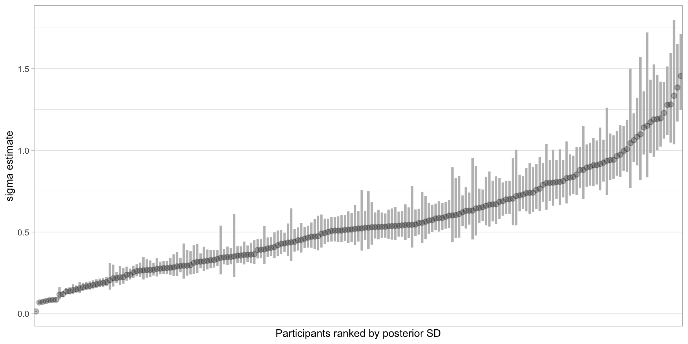
Prediction intervals now differ by person
Code
fits2 <- newd %>%
add_epred_draws(melsm.2)
preds2 <- newd %>%
add_predicted_draws(melsm.2)
fits2 %>%
ggplot(aes(x = day01, y = N_A.std)) +
stat_lineribbon(aes(y = .epred),.width = c(.95), alpha = 1/4, color ="grey") +
stat_lineribbon(data = preds2, aes(y = .prediction),.width = c(.90), alpha = 1/4, color ="blue") +
geom_point(data = newd) +
facet_wrap(~record_id)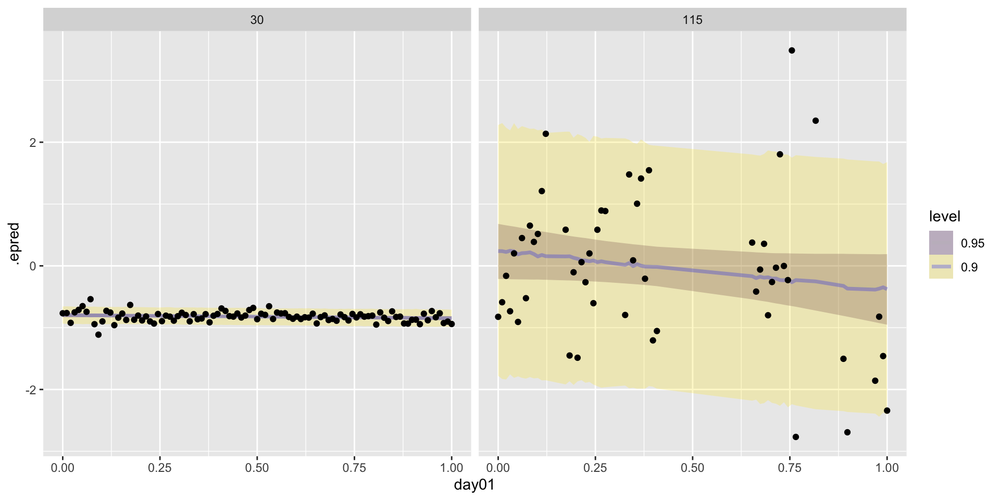
Is the MELSM worth it?
Code
elpd_diff se_diff
melsm.2 0.0 0.0
melsm.1 -4366.4 111.6Letting each person have their own sigma improves expected out-of-sample prediction by a lot, relative to its standard error.
Time as a predictor of sigma
Code
melsm.3 <-
brm(family = gaussian,
bf(N_A.std ~ 1 + day01 + (1 + day01 |i| record_id),
sigma ~ 1 + day01 + (1 + day01 |i| record_id)),
prior = c(prior(normal(0, 0.2), class = Intercept),
prior(normal(0, 1), class = b),
prior(exponential(1), class = sd),
prior(normal(0, 1), class = Intercept, dpar = sigma),
prior(normal(0, 1), class = b, dpar = sigma),
prior(exponential(1), class = sd, dpar = sigma),
prior(lkj(2), class = cor)),
iter = 3000, warmup = 1000, chains = 4, cores = 4,
backend = "cmdstanr",
data = melsm,
file = "melsm.3")melsm.3 summary
Family: gaussian
Links: mu = identity; sigma = log
Formula: N_A.std ~ 1 + day01 + (1 + day01 | i | record_id)
sigma ~ 1 + day01 + (1 + day01 | i | record_id)
Data: melsm (Number of observations: 13033)
Draws: 4 chains, each with iter = 3000; warmup = 1000; thin = 1;
total post-warmup draws = 8000
Multilevel Hyperparameters:
~record_id (Number of levels: 193)
Estimate Est.Error l-95% CI u-95% CI Rhat
sd(Intercept) 0.76 0.04 0.69 0.84 1.00
sd(day01) 0.60 0.04 0.52 0.68 1.00
sd(sigma_Intercept) 0.70 0.04 0.63 0.78 1.00
sd(sigma_day01) 0.36 0.04 0.29 0.44 1.00
cor(Intercept,day01) -0.31 0.08 -0.46 -0.14 1.00
cor(Intercept,sigma_Intercept) 0.64 0.05 0.55 0.73 1.00
cor(day01,sigma_Intercept) -0.20 0.08 -0.35 -0.04 1.00
cor(Intercept,sigma_day01) -0.16 0.11 -0.36 0.05 1.00
cor(day01,sigma_day01) 0.61 0.09 0.42 0.77 1.00
cor(sigma_Intercept,sigma_day01) -0.15 0.10 -0.34 0.05 1.00
Bulk_ESS Tail_ESS
sd(Intercept) 1213 2141
sd(day01) 3019 4707
sd(sigma_Intercept) 2247 4054
sd(sigma_day01) 4580 5566
cor(Intercept,day01) 1851 4078
cor(Intercept,sigma_Intercept) 2289 3678
cor(day01,sigma_Intercept) 1757 3352
cor(Intercept,sigma_day01) 5963 6048
cor(day01,sigma_day01) 4894 5333
cor(sigma_Intercept,sigma_day01) 5257 5757
Regression Coefficients:
Estimate Est.Error l-95% CI u-95% CI Rhat Bulk_ESS Tail_ESS
Intercept 0.03 0.05 -0.08 0.14 1.00 356 886
sigma_Intercept -0.75 0.05 -0.85 -0.64 1.00 979 2025
day01 -0.15 0.05 -0.26 -0.05 1.00 1249 2550
sigma_day01 -0.11 0.04 -0.18 -0.03 1.00 4041 5463
Draws were sampled using sample(hmc). For each parameter, Bulk_ESS
and Tail_ESS are effective sample size measures, and Rhat is the potential
scale reduction factor on split chains (at convergence, Rhat = 1).Sigma intercept and slope
# A tibble: 2 × 7
.variable .value .lower .upper .width .point .interval
<chr> <dbl> <dbl> <dbl> <dbl> <chr> <chr>
1 b_sigma_day01 -0.107 -0.185 -0.0271 0.95 median qi
2 b_sigma_Intercept -0.748 -0.852 -0.645 0.95 median qi Sigma at the start and the end
Code
# A tibble: 1 × 6
sigma_day0 .lower .upper .width .point .interval
<dbl> <dbl> <dbl> <dbl> <chr> <chr>
1 0.473 0.427 0.525 0.95 median qi Code
# A tibble: 1 × 6
sigma_day1 .lower .upper .width .point .interval
<dbl> <dbl> <dbl> <dbl> <chr> <chr>
1 0.425 0.379 0.475 0.95 median qi Average mu and sigma over time
Code
# A tibble: 160,000 × 4
day01 .epred mu sigma
<dbl> <dbl> <dbl> <dbl>
1 0 0.144 0.144 0.491
2 0 0.121 0.121 0.494
3 0 0.0992 0.0992 0.479
4 0 0.0858 0.0858 0.461
5 0 0.114 0.114 0.497
6 0 0.111 0.111 0.472
7 0 0.111 0.111 0.480
8 0 0.102 0.102 0.487
9 0 0.0723 0.0723 0.480
10 0 0.0899 0.0899 0.495
# ℹ 159,990 more rows20 × 8,000 = 160,000 rows
Sigma over the study
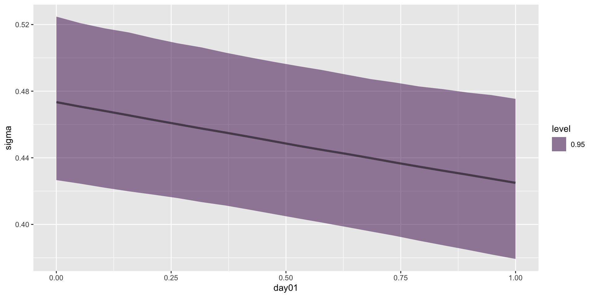
Person-specific sigma effects
Let’s look at the random effects for sigma. Remember we fit one for both the intercept and the slope (time).
Code
# A tibble: 3,088,000 × 6
# Groups: ID, term [386]
ID term r_record_id__sigma .chain .iteration .draw
<int> <chr> <dbl> <int> <int> <int>
1 1 day01 1.52 1 1 1
2 1 day01 0.917 1 2 2
3 1 day01 1.01 1 3 3
4 1 day01 1.50 1 4 4
5 1 day01 0.908 1 5 5
6 1 day01 1.24 1 6 6
7 1 day01 1.08 1 7 7
8 1 day01 1.26 1 8 8
9 1 day01 1.02 1 9 9
10 1 day01 0.898 1 10 10
# ℹ 3,087,990 more rows193 people × 8,000 draws × 2 terms
Person sigma intercepts and slopes
Code
melsm.3 %>%
spread_draws(b_sigma_Intercept,b_sigma_day01, r_record_id__sigma[ID, term]) %>%
pivot_wider(names_from = term, values_from = r_record_id__sigma) %>%
mutate(r_sigma_intercept = exp(b_sigma_Intercept + Intercept)) %>%
mutate(r_sigma_slope = (b_sigma_day01 + day01)) %>%
select(ID, r_sigma_intercept, r_sigma_slope ) %>%
median_qi() %>%
select(ID, r_sigma_intercept, r_sigma_slope)# A tibble: 193 × 3
ID r_sigma_intercept r_sigma_slope
<int> <dbl> <dbl>
1 1 0.665 0.0675
2 2 0.113 0.337
3 3 0.626 -0.294
4 4 0.898 -0.132
5 5 0.204 0.0253
6 6 0.731 -0.269
7 7 0.632 -0.475
8 8 0.174 0.0729
9 9 0.269 -0.00539
10 10 0.346 -0.0590
# ℹ 183 more rowsSigma at day 0, by person
melsm.3 %>%
spread_draws(b_sigma_Intercept, r_record_id__sigma[ID, term]) %>%
mutate(r_record_id__sigma = exp(b_sigma_Intercept + r_record_id__sigma)) %>%
median_qi(estimate = r_record_id__sigma) %>%
filter(term == "Intercept") %>%
ggplot(aes(x = reorder(ID, estimate), y = estimate, ymin = .lower, ymax = .upper)) +
geom_pointinterval(point_colour = "black", interval_color = "grey", point_alpha = .25) + scale_x_discrete("Participants ranked by posterior SD", breaks = NULL) + ylab("sigma estimate") + theme_light()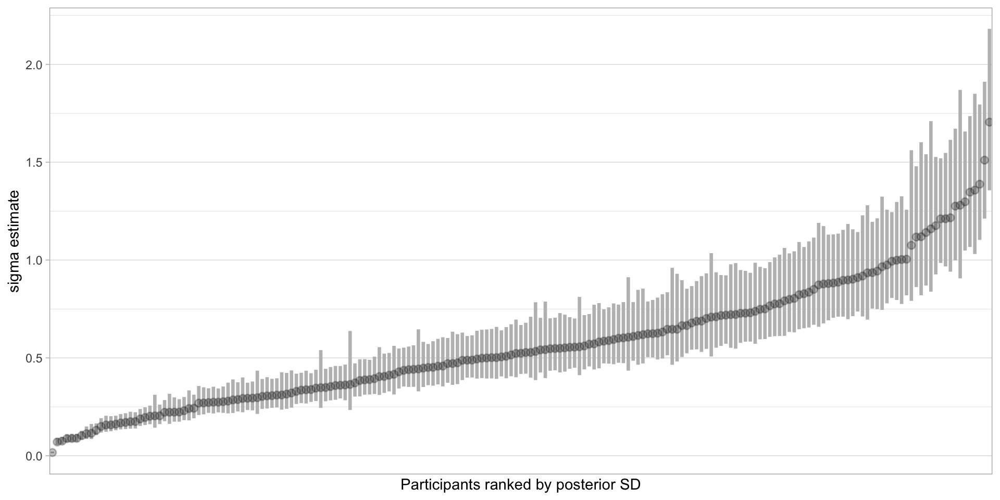
Sigma slopes, by person
Code
melsm.3 %>%
spread_draws(b_sigma_day01, r_record_id__sigma[ID, term]) %>%
mutate(r_record_id__sigma = (b_sigma_day01 + r_record_id__sigma)) %>%
median_qi(estimate = r_record_id__sigma) %>%
filter(term == "day01") %>%
ggplot(aes(x = reorder(ID, estimate), y = estimate, ymin = .lower, ymax = .upper)) +
geom_pointinterval(point_colour = "black", interval_color = "grey", point_alpha = .25) + scale_x_discrete("Participants ranked by their sigma slope", breaks = NULL) + ylab("change in log(sigma) across the study") + theme_light()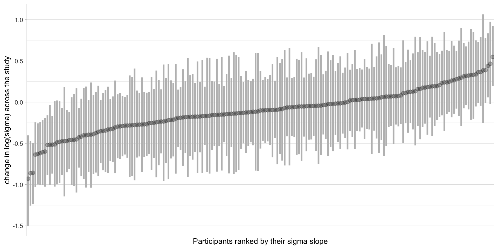
Predictions from melsm.3
Code
fits3 <- newd %>%
add_epred_draws(melsm.3)
preds3 <- newd %>%
add_predicted_draws(melsm.3)
fits3 %>%
ggplot(aes(x = day01, y = N_A.std)) +
stat_lineribbon(aes(y = .epred),.width = c(.95), alpha = 1/4, color ="grey") +
stat_lineribbon(data = preds3, aes(y = .prediction),.width = c(.90), alpha = 1/4, color ="blue") +
geom_point(data = newd) +
facet_wrap(~record_id)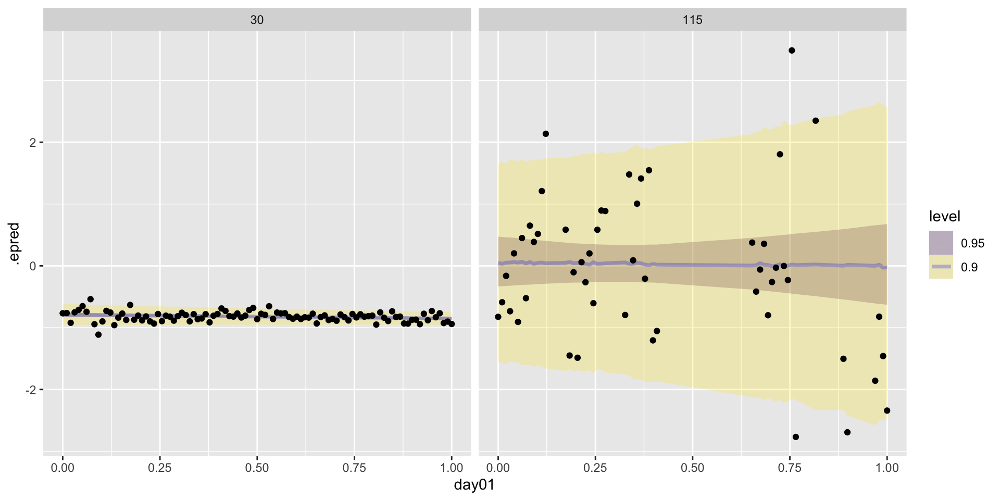
Predictive distributions
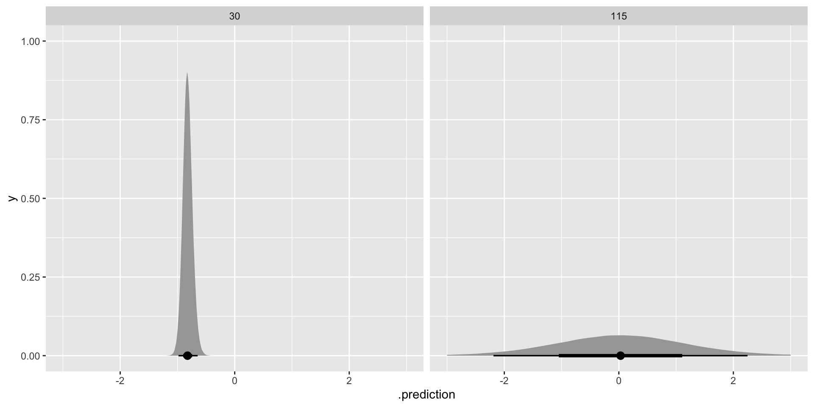
Multivariate MELSM
Code
melsm.4 <-
brm(family = gaussian,
bf(mvbind(N_A.std, P_A.std) ~ 1 + day01 + (1 + day01 |i| record_id),
sigma ~ 1 + day01 + (1 + day01 |i| record_id)) + set_rescor(rescor = FALSE),
prior = c(prior(normal(0, 0.2), class = Intercept, resp = NAstd),
prior(normal(0, 1), class = b, resp = NAstd),
prior(exponential(1), class = sd, resp = NAstd),
prior(normal(0, 1), class = Intercept, dpar = sigma, resp = NAstd),
prior(normal(0, 1), class = b, dpar = sigma, resp = NAstd),
prior(exponential(1), class = sd, dpar = sigma, resp = NAstd),
prior(normal(0, 0.2), class = Intercept, resp = PAstd),
prior(normal(0, 1), class = b, resp = PAstd),
prior(exponential(1), class = sd, resp = PAstd),
prior(normal(0, 1), class = Intercept, dpar = sigma, resp = PAstd),
prior(normal(0, 1), class = b, dpar = sigma, resp = PAstd),
prior(exponential(1), class = sd, dpar = sigma, resp = PAstd),
prior(lkj(2), class = cor)),
iter = 3000, warmup = 1000, chains = 4, cores = 4,
data = melsm,
backend = "cmdstanr",
file = "melsm.4")melsm.4 summary
Family: MV(gaussian, gaussian)
Links: mu = identity; sigma = log
mu = identity; sigma = log
Formula: N_A.std ~ 1 + day01 + (1 + day01 | i | record_id)
sigma ~ 1 + day01 + (1 + day01 | i | record_id)
P_A.std ~ 1 + day01 + (1 + day01 | i | record_id)
sigma ~ 1 + day01 + (1 + day01 | i | record_id)
Data: melsm (Number of observations: 13033)
Draws: 4 chains, each with iter = 3000; warmup = 1000; thin = 1;
total post-warmup draws = 8000
Multilevel Hyperparameters:
~record_id (Number of levels: 193)
Estimate Est.Error l-95% CI
sd(NAstd_Intercept) 0.76 0.04 0.69
sd(NAstd_day01) 0.61 0.04 0.53
sd(sigma_NAstd_Intercept) 0.70 0.04 0.63
sd(sigma_NAstd_day01) 0.36 0.04 0.29
sd(PAstd_Intercept) 0.83 0.04 0.75
sd(PAstd_day01) 0.81 0.05 0.71
sd(sigma_PAstd_Intercept) 0.43 0.02 0.38
sd(sigma_PAstd_day01) 0.10 0.06 0.01
cor(NAstd_Intercept,NAstd_day01) -0.30 0.08 -0.45
cor(NAstd_Intercept,sigma_NAstd_Intercept) 0.63 0.05 0.54
cor(NAstd_day01,sigma_NAstd_Intercept) -0.19 0.08 -0.34
cor(NAstd_Intercept,sigma_NAstd_day01) -0.15 0.10 -0.35
cor(NAstd_day01,sigma_NAstd_day01) 0.58 0.09 0.39
cor(sigma_NAstd_Intercept,sigma_NAstd_day01) -0.14 0.10 -0.32
cor(NAstd_Intercept,PAstd_Intercept) -0.09 0.07 -0.23
cor(NAstd_day01,PAstd_Intercept) 0.10 0.08 -0.06
cor(sigma_NAstd_Intercept,PAstd_Intercept) -0.27 0.07 -0.40
cor(sigma_NAstd_day01,PAstd_Intercept) 0.07 0.10 -0.13
cor(NAstd_Intercept,PAstd_day01) 0.09 0.08 -0.07
cor(NAstd_day01,PAstd_day01) -0.26 0.09 -0.42
cor(sigma_NAstd_Intercept,PAstd_day01) 0.02 0.08 -0.13
cor(sigma_NAstd_day01,PAstd_day01) 0.07 0.12 -0.16
cor(PAstd_Intercept,PAstd_day01) -0.24 0.07 -0.38
cor(NAstd_Intercept,sigma_PAstd_Intercept) 0.18 0.07 0.03
cor(NAstd_day01,sigma_PAstd_Intercept) 0.00 0.08 -0.16
cor(sigma_NAstd_Intercept,sigma_PAstd_Intercept) 0.54 0.06 0.43
cor(sigma_NAstd_day01,sigma_PAstd_Intercept) 0.02 0.10 -0.19
cor(PAstd_Intercept,sigma_PAstd_Intercept) -0.29 0.07 -0.43
cor(PAstd_day01,sigma_PAstd_Intercept) -0.12 0.08 -0.28
cor(NAstd_Intercept,sigma_PAstd_day01) -0.01 0.22 -0.44
cor(NAstd_day01,sigma_PAstd_day01) 0.02 0.22 -0.42
cor(sigma_NAstd_Intercept,sigma_PAstd_day01) -0.05 0.21 -0.48
cor(sigma_NAstd_day01,sigma_PAstd_day01) 0.16 0.24 -0.37
cor(PAstd_Intercept,sigma_PAstd_day01) 0.18 0.22 -0.30
cor(PAstd_day01,sigma_PAstd_day01) -0.14 0.23 -0.57
cor(sigma_PAstd_Intercept,sigma_PAstd_day01) 0.06 0.23 -0.39
u-95% CI Rhat Bulk_ESS
sd(NAstd_Intercept) 0.84 1.00 1106
sd(NAstd_day01) 0.70 1.00 2149
sd(sigma_NAstd_Intercept) 0.78 1.00 1885
sd(sigma_NAstd_day01) 0.44 1.00 4012
sd(PAstd_Intercept) 0.92 1.00 1745
sd(PAstd_day01) 0.92 1.00 3367
sd(sigma_PAstd_Intercept) 0.48 1.00 2971
sd(sigma_PAstd_day01) 0.21 1.01 642
cor(NAstd_Intercept,NAstd_day01) -0.13 1.00 1505
cor(NAstd_Intercept,sigma_NAstd_Intercept) 0.72 1.00 1690
cor(NAstd_day01,sigma_NAstd_Intercept) -0.03 1.00 1436
cor(NAstd_Intercept,sigma_NAstd_day01) 0.05 1.00 4950
cor(NAstd_day01,sigma_NAstd_day01) 0.74 1.00 4465
cor(sigma_NAstd_Intercept,sigma_NAstd_day01) 0.05 1.00 4248
cor(NAstd_Intercept,PAstd_Intercept) 0.05 1.00 1506
cor(NAstd_day01,PAstd_Intercept) 0.25 1.00 877
cor(sigma_NAstd_Intercept,PAstd_Intercept) -0.14 1.00 1124
cor(sigma_NAstd_day01,PAstd_Intercept) 0.26 1.01 337
cor(NAstd_Intercept,PAstd_day01) 0.25 1.00 2623
cor(NAstd_day01,PAstd_day01) -0.09 1.00 2386
cor(sigma_NAstd_Intercept,PAstd_day01) 0.17 1.00 2236
cor(sigma_NAstd_day01,PAstd_day01) 0.29 1.00 912
cor(PAstd_Intercept,PAstd_day01) -0.10 1.00 2370
cor(NAstd_Intercept,sigma_PAstd_Intercept) 0.32 1.00 2237
cor(NAstd_day01,sigma_PAstd_Intercept) 0.16 1.00 1546
cor(sigma_NAstd_Intercept,sigma_PAstd_Intercept) 0.64 1.00 2692
cor(sigma_NAstd_day01,sigma_PAstd_Intercept) 0.22 1.00 1126
cor(PAstd_Intercept,sigma_PAstd_Intercept) -0.15 1.00 2220
cor(PAstd_day01,sigma_PAstd_Intercept) 0.04 1.00 2471
cor(NAstd_Intercept,sigma_PAstd_day01) 0.42 1.00 11342
cor(NAstd_day01,sigma_PAstd_day01) 0.46 1.00 10142
cor(sigma_NAstd_Intercept,sigma_PAstd_day01) 0.38 1.00 11626
cor(sigma_NAstd_day01,sigma_PAstd_day01) 0.59 1.00 6187
cor(PAstd_Intercept,sigma_PAstd_day01) 0.59 1.00 10212
cor(PAstd_day01,sigma_PAstd_day01) 0.34 1.00 10471
cor(sigma_PAstd_Intercept,sigma_PAstd_day01) 0.53 1.00 8387
Tail_ESS
sd(NAstd_Intercept) 2678
sd(NAstd_day01) 3074
sd(sigma_NAstd_Intercept) 2954
sd(sigma_NAstd_day01) 6225
sd(PAstd_Intercept) 3286
sd(PAstd_day01) 4740
sd(sigma_PAstd_Intercept) 4700
sd(sigma_PAstd_day01) 2094
cor(NAstd_Intercept,NAstd_day01) 2966
cor(NAstd_Intercept,sigma_NAstd_Intercept) 3318
cor(NAstd_day01,sigma_NAstd_Intercept) 3048
cor(NAstd_Intercept,sigma_NAstd_day01) 5303
cor(NAstd_day01,sigma_NAstd_day01) 5254
cor(sigma_NAstd_Intercept,sigma_NAstd_day01) 5525
cor(NAstd_Intercept,PAstd_Intercept) 2128
cor(NAstd_day01,PAstd_Intercept) 1491
cor(sigma_NAstd_Intercept,PAstd_Intercept) 1744
cor(sigma_NAstd_day01,PAstd_Intercept) 1173
cor(NAstd_Intercept,PAstd_day01) 4433
cor(NAstd_day01,PAstd_day01) 4250
cor(sigma_NAstd_Intercept,PAstd_day01) 4031
cor(sigma_NAstd_day01,PAstd_day01) 2135
cor(PAstd_Intercept,PAstd_day01) 3959
cor(NAstd_Intercept,sigma_PAstd_Intercept) 3782
cor(NAstd_day01,sigma_PAstd_Intercept) 2533
cor(sigma_NAstd_Intercept,sigma_PAstd_Intercept) 4445
cor(sigma_NAstd_day01,sigma_PAstd_Intercept) 2461
cor(PAstd_Intercept,sigma_PAstd_Intercept) 3506
cor(PAstd_day01,sigma_PAstd_Intercept) 4189
cor(NAstd_Intercept,sigma_PAstd_day01) 4878
cor(NAstd_day01,sigma_PAstd_day01) 4648
cor(sigma_NAstd_Intercept,sigma_PAstd_day01) 4216
cor(sigma_NAstd_day01,sigma_PAstd_day01) 3874
cor(PAstd_Intercept,sigma_PAstd_day01) 4268
cor(PAstd_day01,sigma_PAstd_day01) 4767
cor(sigma_PAstd_Intercept,sigma_PAstd_day01) 4346
Regression Coefficients:
Estimate Est.Error l-95% CI u-95% CI Rhat Bulk_ESS
NAstd_Intercept 0.03 0.05 -0.08 0.13 1.01 389
sigma_NAstd_Intercept -0.75 0.05 -0.85 -0.65 1.01 818
PAstd_Intercept 0.10 0.06 -0.01 0.22 1.00 1507
sigma_PAstd_Intercept -0.66 0.03 -0.72 -0.60 1.00 2274
NAstd_day01 -0.15 0.05 -0.25 -0.04 1.00 975
sigma_NAstd_day01 -0.11 0.04 -0.18 -0.03 1.00 3710
PAstd_day01 -0.31 0.07 -0.44 -0.18 1.00 2799
sigma_PAstd_day01 -0.08 0.03 -0.13 -0.03 1.00 11391
Tail_ESS
NAstd_Intercept 1032
sigma_NAstd_Intercept 2019
PAstd_Intercept 2706
sigma_PAstd_Intercept 4154
NAstd_day01 1880
sigma_NAstd_day01 4670
PAstd_day01 4182
sigma_PAstd_day01 6516
Draws were sampled using sample(hmc). For each parameter, Bulk_ESS
and Tail_ESS are effective sample size measures, and Rhat is the potential
scale reduction factor on split chains (at convergence, Rhat = 1).Variables in melsm.4
About 1,600 parameters estimated
[1] "b_NAstd_Intercept"
[2] "b_sigma_NAstd_Intercept"
[3] "b_PAstd_Intercept"
[4] "b_sigma_PAstd_Intercept"
[5] "b_NAstd_day01"
[6] "b_sigma_NAstd_day01"
[7] "b_PAstd_day01"
[8] "b_sigma_PAstd_day01"
[9] "sd_record_id__NAstd_Intercept"
[10] "sd_record_id__NAstd_day01"
[11] "sd_record_id__sigma_NAstd_Intercept"
[12] "sd_record_id__sigma_NAstd_day01"
[13] "sd_record_id__PAstd_Intercept"
[14] "sd_record_id__PAstd_day01"
[15] "sd_record_id__sigma_PAstd_Intercept"
[16] "sd_record_id__sigma_PAstd_day01"
[17] "cor_record_id__NAstd_Intercept__NAstd_day01"
[18] "cor_record_id__NAstd_Intercept__sigma_NAstd_Intercept"
[19] "cor_record_id__NAstd_day01__sigma_NAstd_Intercept"
[20] "cor_record_id__NAstd_Intercept__sigma_NAstd_day01"
[21] "cor_record_id__NAstd_day01__sigma_NAstd_day01"
[22] "cor_record_id__sigma_NAstd_Intercept__sigma_NAstd_day01"
[23] "cor_record_id__NAstd_Intercept__PAstd_Intercept"
[24] "cor_record_id__NAstd_day01__PAstd_Intercept"
[25] "cor_record_id__sigma_NAstd_Intercept__PAstd_Intercept"
[26] "cor_record_id__sigma_NAstd_day01__PAstd_Intercept"
[27] "cor_record_id__NAstd_Intercept__PAstd_day01"
[28] "cor_record_id__NAstd_day01__PAstd_day01"
[29] "cor_record_id__sigma_NAstd_Intercept__PAstd_day01"
[30] "cor_record_id__sigma_NAstd_day01__PAstd_day01"
[31] "cor_record_id__PAstd_Intercept__PAstd_day01"
[32] "cor_record_id__NAstd_Intercept__sigma_PAstd_Intercept"
[33] "cor_record_id__NAstd_day01__sigma_PAstd_Intercept"
[34] "cor_record_id__sigma_NAstd_Intercept__sigma_PAstd_Intercept"
[35] "cor_record_id__sigma_NAstd_day01__sigma_PAstd_Intercept"
[36] "cor_record_id__PAstd_Intercept__sigma_PAstd_Intercept"
[37] "cor_record_id__PAstd_day01__sigma_PAstd_Intercept"
[38] "cor_record_id__NAstd_Intercept__sigma_PAstd_day01"
[39] "cor_record_id__NAstd_day01__sigma_PAstd_day01"
[40] "cor_record_id__sigma_NAstd_Intercept__sigma_PAstd_day01"
[41] "cor_record_id__sigma_NAstd_day01__sigma_PAstd_day01"
[42] "cor_record_id__PAstd_Intercept__sigma_PAstd_day01"
[43] "cor_record_id__PAstd_day01__sigma_PAstd_day01"
[44] "cor_record_id__sigma_PAstd_Intercept__sigma_PAstd_day01"
[45] "Intercept_NAstd"
[46] "Intercept_sigma_NAstd"
[47] "Intercept_PAstd"
[48] "Intercept_sigma_PAstd"
[49] "r_record_id__NAstd[1,Intercept]"
[50] "r_record_id__NAstd[2,Intercept]"
[51] "r_record_id__NAstd[3,Intercept]"
[52] "r_record_id__NAstd[4,Intercept]"
[53] "r_record_id__NAstd[5,Intercept]"
[54] "r_record_id__NAstd[6,Intercept]"
[55] "r_record_id__NAstd[7,Intercept]"
[56] "r_record_id__NAstd[8,Intercept]"
[57] "r_record_id__NAstd[9,Intercept]"
[58] "r_record_id__NAstd[10,Intercept]"
[59] "r_record_id__NAstd[11,Intercept]"
[60] "r_record_id__NAstd[12,Intercept]"
[61] "r_record_id__NAstd[13,Intercept]"
[62] "r_record_id__NAstd[14,Intercept]"
[63] "r_record_id__NAstd[15,Intercept]"
[64] "r_record_id__NAstd[16,Intercept]"
[65] "r_record_id__NAstd[17,Intercept]"
[66] "r_record_id__NAstd[20,Intercept]"
[67] "r_record_id__NAstd[23,Intercept]"
[68] "r_record_id__NAstd[24,Intercept]"
[69] "r_record_id__NAstd[25,Intercept]"
[70] "r_record_id__NAstd[26,Intercept]"
[71] "r_record_id__NAstd[27,Intercept]"
[72] "r_record_id__NAstd[28,Intercept]"
[73] "r_record_id__NAstd[29,Intercept]"
[74] "r_record_id__NAstd[30,Intercept]"
[75] "r_record_id__NAstd[31,Intercept]"
[76] "r_record_id__NAstd[32,Intercept]"
[77] "r_record_id__NAstd[33,Intercept]"
[78] "r_record_id__NAstd[34,Intercept]"
[79] "r_record_id__NAstd[35,Intercept]"
[80] "r_record_id__NAstd[36,Intercept]"
[81] "r_record_id__NAstd[37,Intercept]"
[82] "r_record_id__NAstd[38,Intercept]"
[83] "r_record_id__NAstd[39,Intercept]"
[84] "r_record_id__NAstd[40,Intercept]"
[85] "r_record_id__NAstd[41,Intercept]"
[86] "r_record_id__NAstd[42,Intercept]"
[87] "r_record_id__NAstd[43,Intercept]"
[88] "r_record_id__NAstd[44,Intercept]"
[89] "r_record_id__NAstd[46,Intercept]"
[90] "r_record_id__NAstd[47,Intercept]"
[91] "r_record_id__NAstd[48,Intercept]"
[92] "r_record_id__NAstd[49,Intercept]"
[93] "r_record_id__NAstd[50,Intercept]"
[94] "r_record_id__NAstd[51,Intercept]"
[95] "r_record_id__NAstd[52,Intercept]"
[96] "r_record_id__NAstd[53,Intercept]"
[97] "r_record_id__NAstd[54,Intercept]"
[98] "r_record_id__NAstd[55,Intercept]"
[99] "r_record_id__NAstd[56,Intercept]"
[100] "r_record_id__NAstd[58,Intercept]"
[101] "r_record_id__NAstd[60,Intercept]"
[102] "r_record_id__NAstd[64,Intercept]"
[103] "r_record_id__NAstd[65,Intercept]"
[104] "r_record_id__NAstd[67,Intercept]"
[105] "r_record_id__NAstd[68,Intercept]"
[106] "r_record_id__NAstd[69,Intercept]"
[107] "r_record_id__NAstd[70,Intercept]"
[108] "r_record_id__NAstd[72,Intercept]"
[109] "r_record_id__NAstd[73,Intercept]"
[110] "r_record_id__NAstd[75,Intercept]"
[111] "r_record_id__NAstd[76,Intercept]"
[112] "r_record_id__NAstd[80,Intercept]"
[113] "r_record_id__NAstd[81,Intercept]"
[114] "r_record_id__NAstd[82,Intercept]"
[115] "r_record_id__NAstd[83,Intercept]"
[116] "r_record_id__NAstd[85,Intercept]"
[117] "r_record_id__NAstd[86,Intercept]"
[118] "r_record_id__NAstd[88,Intercept]"
[119] "r_record_id__NAstd[91,Intercept]"
[120] "r_record_id__NAstd[92,Intercept]"
[121] "r_record_id__NAstd[94,Intercept]"
[122] "r_record_id__NAstd[95,Intercept]"
[123] "r_record_id__NAstd[96,Intercept]"
[124] "r_record_id__NAstd[97,Intercept]"
[125] "r_record_id__NAstd[98,Intercept]"
[126] "r_record_id__NAstd[99,Intercept]"
[127] "r_record_id__NAstd[100,Intercept]"
[128] "r_record_id__NAstd[101,Intercept]"
[129] "r_record_id__NAstd[102,Intercept]"
[130] "r_record_id__NAstd[104,Intercept]"
[131] "r_record_id__NAstd[105,Intercept]"
[132] "r_record_id__NAstd[106,Intercept]"
[133] "r_record_id__NAstd[107,Intercept]"
[134] "r_record_id__NAstd[109,Intercept]"
[135] "r_record_id__NAstd[110,Intercept]"
[136] "r_record_id__NAstd[111,Intercept]"
[137] "r_record_id__NAstd[112,Intercept]"
[138] "r_record_id__NAstd[113,Intercept]"
[139] "r_record_id__NAstd[114,Intercept]"
[140] "r_record_id__NAstd[115,Intercept]"
[141] "r_record_id__NAstd[116,Intercept]"
[142] "r_record_id__NAstd[117,Intercept]"
[143] "r_record_id__NAstd[119,Intercept]"
[144] "r_record_id__NAstd[120,Intercept]"
[145] "r_record_id__NAstd[121,Intercept]"
[146] "r_record_id__NAstd[123,Intercept]"
[147] "r_record_id__NAstd[125,Intercept]"
[148] "r_record_id__NAstd[127,Intercept]"
[149] "r_record_id__NAstd[128,Intercept]"
[150] "r_record_id__NAstd[129,Intercept]"
[151] "r_record_id__NAstd[132,Intercept]"
[152] "r_record_id__NAstd[133,Intercept]"
[153] "r_record_id__NAstd[134,Intercept]"
[154] "r_record_id__NAstd[135,Intercept]"
[155] "r_record_id__NAstd[136,Intercept]"
[156] "r_record_id__NAstd[137,Intercept]"
[157] "r_record_id__NAstd[138,Intercept]"
[158] "r_record_id__NAstd[139,Intercept]"
[159] "r_record_id__NAstd[140,Intercept]"
[160] "r_record_id__NAstd[142,Intercept]"
[161] "r_record_id__NAstd[143,Intercept]"
[162] "r_record_id__NAstd[144,Intercept]"
[163] "r_record_id__NAstd[145,Intercept]"
[164] "r_record_id__NAstd[147,Intercept]"
[165] "r_record_id__NAstd[148,Intercept]"
[166] "r_record_id__NAstd[149,Intercept]"
[167] "r_record_id__NAstd[150,Intercept]"
[168] "r_record_id__NAstd[151,Intercept]"
[169] "r_record_id__NAstd[152,Intercept]"
[170] "r_record_id__NAstd[153,Intercept]"
[171] "r_record_id__NAstd[154,Intercept]"
[172] "r_record_id__NAstd[155,Intercept]"
[173] "r_record_id__NAstd[157,Intercept]"
[174] "r_record_id__NAstd[158,Intercept]"
[175] "r_record_id__NAstd[160,Intercept]"
[176] "r_record_id__NAstd[162,Intercept]"
[177] "r_record_id__NAstd[163,Intercept]"
[178] "r_record_id__NAstd[164,Intercept]"
[179] "r_record_id__NAstd[165,Intercept]"
[180] "r_record_id__NAstd[166,Intercept]"
[181] "r_record_id__NAstd[167,Intercept]"
[182] "r_record_id__NAstd[168,Intercept]"
[183] "r_record_id__NAstd[169,Intercept]"
[184] "r_record_id__NAstd[170,Intercept]"
[185] "r_record_id__NAstd[171,Intercept]"
[186] "r_record_id__NAstd[173,Intercept]"
[187] "r_record_id__NAstd[174,Intercept]"
[188] "r_record_id__NAstd[176,Intercept]"
[189] "r_record_id__NAstd[177,Intercept]"
[190] "r_record_id__NAstd[178,Intercept]"
[191] "r_record_id__NAstd[181,Intercept]"
[192] "r_record_id__NAstd[182,Intercept]"
[193] "r_record_id__NAstd[183,Intercept]"
[194] "r_record_id__NAstd[184,Intercept]"
[195] "r_record_id__NAstd[185,Intercept]"
[196] "r_record_id__NAstd[186,Intercept]"
[197] "r_record_id__NAstd[188,Intercept]"
[198] "r_record_id__NAstd[189,Intercept]"
[199] "r_record_id__NAstd[190,Intercept]"
[200] "r_record_id__NAstd[191,Intercept]"
[201] "r_record_id__NAstd[194,Intercept]"
[202] "r_record_id__NAstd[195,Intercept]"
[203] "r_record_id__NAstd[196,Intercept]"
[204] "r_record_id__NAstd[197,Intercept]"
[205] "r_record_id__NAstd[198,Intercept]"
[206] "r_record_id__NAstd[199,Intercept]"
[207] "r_record_id__NAstd[201,Intercept]"
[208] "r_record_id__NAstd[202,Intercept]"
[209] "r_record_id__NAstd[203,Intercept]"
[210] "r_record_id__NAstd[204,Intercept]"
[211] "r_record_id__NAstd[205,Intercept]"
[212] "r_record_id__NAstd[206,Intercept]"
[213] "r_record_id__NAstd[207,Intercept]"
[214] "r_record_id__NAstd[208,Intercept]"
[215] "r_record_id__NAstd[209,Intercept]"
[216] "r_record_id__NAstd[211,Intercept]"
[217] "r_record_id__NAstd[212,Intercept]"
[218] "r_record_id__NAstd[213,Intercept]"
[219] "r_record_id__NAstd[214,Intercept]"
[220] "r_record_id__NAstd[216,Intercept]"
[221] "r_record_id__NAstd[217,Intercept]"
[222] "r_record_id__NAstd[219,Intercept]"
[223] "r_record_id__NAstd[220,Intercept]"
[224] "r_record_id__NAstd[221,Intercept]"
[225] "r_record_id__NAstd[222,Intercept]"
[226] "r_record_id__NAstd[223,Intercept]"
[227] "r_record_id__NAstd[224,Intercept]"
[228] "r_record_id__NAstd[225,Intercept]"
[229] "r_record_id__NAstd[226,Intercept]"
[230] "r_record_id__NAstd[227,Intercept]"
[231] "r_record_id__NAstd[228,Intercept]"
[232] "r_record_id__NAstd[229,Intercept]"
[233] "r_record_id__NAstd[230,Intercept]"
[234] "r_record_id__NAstd[231,Intercept]"
[235] "r_record_id__NAstd[232,Intercept]"
[236] "r_record_id__NAstd[233,Intercept]"
[237] "r_record_id__NAstd[234,Intercept]"
[238] "r_record_id__NAstd[236,Intercept]"
[239] "r_record_id__NAstd[237,Intercept]"
[240] "r_record_id__NAstd[238,Intercept]"
[241] "r_record_id__NAstd[239,Intercept]"
[242] "r_record_id__NAstd[1,day01]"
[243] "r_record_id__NAstd[2,day01]"
[244] "r_record_id__NAstd[3,day01]"
[245] "r_record_id__NAstd[4,day01]"
[246] "r_record_id__NAstd[5,day01]"
[247] "r_record_id__NAstd[6,day01]"
[248] "r_record_id__NAstd[7,day01]"
[249] "r_record_id__NAstd[8,day01]"
[250] "r_record_id__NAstd[9,day01]"
[251] "r_record_id__NAstd[10,day01]"
[252] "r_record_id__NAstd[11,day01]"
[253] "r_record_id__NAstd[12,day01]"
[254] "r_record_id__NAstd[13,day01]"
[255] "r_record_id__NAstd[14,day01]"
[256] "r_record_id__NAstd[15,day01]"
[257] "r_record_id__NAstd[16,day01]"
[258] "r_record_id__NAstd[17,day01]"
[259] "r_record_id__NAstd[20,day01]"
[260] "r_record_id__NAstd[23,day01]"
[261] "r_record_id__NAstd[24,day01]"
[262] "r_record_id__NAstd[25,day01]"
[263] "r_record_id__NAstd[26,day01]"
[264] "r_record_id__NAstd[27,day01]"
[265] "r_record_id__NAstd[28,day01]"
[266] "r_record_id__NAstd[29,day01]"
[267] "r_record_id__NAstd[30,day01]"
[268] "r_record_id__NAstd[31,day01]"
[269] "r_record_id__NAstd[32,day01]"
[270] "r_record_id__NAstd[33,day01]"
[271] "r_record_id__NAstd[34,day01]"
[272] "r_record_id__NAstd[35,day01]"
[273] "r_record_id__NAstd[36,day01]"
[274] "r_record_id__NAstd[37,day01]"
[275] "r_record_id__NAstd[38,day01]"
[276] "r_record_id__NAstd[39,day01]"
[277] "r_record_id__NAstd[40,day01]"
[278] "r_record_id__NAstd[41,day01]"
[279] "r_record_id__NAstd[42,day01]"
[280] "r_record_id__NAstd[43,day01]"
[281] "r_record_id__NAstd[44,day01]"
[282] "r_record_id__NAstd[46,day01]"
[283] "r_record_id__NAstd[47,day01]"
[284] "r_record_id__NAstd[48,day01]"
[285] "r_record_id__NAstd[49,day01]"
[286] "r_record_id__NAstd[50,day01]"
[287] "r_record_id__NAstd[51,day01]"
[288] "r_record_id__NAstd[52,day01]"
[289] "r_record_id__NAstd[53,day01]"
[290] "r_record_id__NAstd[54,day01]"
[291] "r_record_id__NAstd[55,day01]"
[292] "r_record_id__NAstd[56,day01]"
[293] "r_record_id__NAstd[58,day01]"
[294] "r_record_id__NAstd[60,day01]"
[295] "r_record_id__NAstd[64,day01]"
[296] "r_record_id__NAstd[65,day01]"
[297] "r_record_id__NAstd[67,day01]"
[298] "r_record_id__NAstd[68,day01]"
[299] "r_record_id__NAstd[69,day01]"
[300] "r_record_id__NAstd[70,day01]"
[301] "r_record_id__NAstd[72,day01]"
[302] "r_record_id__NAstd[73,day01]"
[303] "r_record_id__NAstd[75,day01]"
[304] "r_record_id__NAstd[76,day01]"
[305] "r_record_id__NAstd[80,day01]"
[306] "r_record_id__NAstd[81,day01]"
[307] "r_record_id__NAstd[82,day01]"
[308] "r_record_id__NAstd[83,day01]"
[309] "r_record_id__NAstd[85,day01]"
[310] "r_record_id__NAstd[86,day01]"
[311] "r_record_id__NAstd[88,day01]"
[312] "r_record_id__NAstd[91,day01]"
[313] "r_record_id__NAstd[92,day01]"
[314] "r_record_id__NAstd[94,day01]"
[315] "r_record_id__NAstd[95,day01]"
[316] "r_record_id__NAstd[96,day01]"
[317] "r_record_id__NAstd[97,day01]"
[318] "r_record_id__NAstd[98,day01]"
[319] "r_record_id__NAstd[99,day01]"
[320] "r_record_id__NAstd[100,day01]"
[321] "r_record_id__NAstd[101,day01]"
[322] "r_record_id__NAstd[102,day01]"
[323] "r_record_id__NAstd[104,day01]"
[324] "r_record_id__NAstd[105,day01]"
[325] "r_record_id__NAstd[106,day01]"
[326] "r_record_id__NAstd[107,day01]"
[327] "r_record_id__NAstd[109,day01]"
[328] "r_record_id__NAstd[110,day01]"
[329] "r_record_id__NAstd[111,day01]"
[330] "r_record_id__NAstd[112,day01]"
[331] "r_record_id__NAstd[113,day01]"
[332] "r_record_id__NAstd[114,day01]"
[333] "r_record_id__NAstd[115,day01]"
[334] "r_record_id__NAstd[116,day01]"
[335] "r_record_id__NAstd[117,day01]"
[336] "r_record_id__NAstd[119,day01]"
[337] "r_record_id__NAstd[120,day01]"
[338] "r_record_id__NAstd[121,day01]"
[339] "r_record_id__NAstd[123,day01]"
[340] "r_record_id__NAstd[125,day01]"
[341] "r_record_id__NAstd[127,day01]"
[342] "r_record_id__NAstd[128,day01]"
[343] "r_record_id__NAstd[129,day01]"
[344] "r_record_id__NAstd[132,day01]"
[345] "r_record_id__NAstd[133,day01]"
[346] "r_record_id__NAstd[134,day01]"
[347] "r_record_id__NAstd[135,day01]"
[348] "r_record_id__NAstd[136,day01]"
[349] "r_record_id__NAstd[137,day01]"
[350] "r_record_id__NAstd[138,day01]"
[351] "r_record_id__NAstd[139,day01]"
[352] "r_record_id__NAstd[140,day01]"
[353] "r_record_id__NAstd[142,day01]"
[354] "r_record_id__NAstd[143,day01]"
[355] "r_record_id__NAstd[144,day01]"
[356] "r_record_id__NAstd[145,day01]"
[357] "r_record_id__NAstd[147,day01]"
[358] "r_record_id__NAstd[148,day01]"
[359] "r_record_id__NAstd[149,day01]"
[360] "r_record_id__NAstd[150,day01]"
[361] "r_record_id__NAstd[151,day01]"
[362] "r_record_id__NAstd[152,day01]"
[363] "r_record_id__NAstd[153,day01]"
[364] "r_record_id__NAstd[154,day01]"
[365] "r_record_id__NAstd[155,day01]"
[366] "r_record_id__NAstd[157,day01]"
[367] "r_record_id__NAstd[158,day01]"
[368] "r_record_id__NAstd[160,day01]"
[369] "r_record_id__NAstd[162,day01]"
[370] "r_record_id__NAstd[163,day01]"
[371] "r_record_id__NAstd[164,day01]"
[372] "r_record_id__NAstd[165,day01]"
[373] "r_record_id__NAstd[166,day01]"
[374] "r_record_id__NAstd[167,day01]"
[375] "r_record_id__NAstd[168,day01]"
[376] "r_record_id__NAstd[169,day01]"
[377] "r_record_id__NAstd[170,day01]"
[378] "r_record_id__NAstd[171,day01]"
[379] "r_record_id__NAstd[173,day01]"
[380] "r_record_id__NAstd[174,day01]"
[381] "r_record_id__NAstd[176,day01]"
[382] "r_record_id__NAstd[177,day01]"
[383] "r_record_id__NAstd[178,day01]"
[384] "r_record_id__NAstd[181,day01]"
[385] "r_record_id__NAstd[182,day01]"
[386] "r_record_id__NAstd[183,day01]"
[387] "r_record_id__NAstd[184,day01]"
[388] "r_record_id__NAstd[185,day01]"
[389] "r_record_id__NAstd[186,day01]"
[390] "r_record_id__NAstd[188,day01]"
[391] "r_record_id__NAstd[189,day01]"
[392] "r_record_id__NAstd[190,day01]"
[393] "r_record_id__NAstd[191,day01]"
[394] "r_record_id__NAstd[194,day01]"
[395] "r_record_id__NAstd[195,day01]"
[396] "r_record_id__NAstd[196,day01]"
[397] "r_record_id__NAstd[197,day01]"
[398] "r_record_id__NAstd[198,day01]"
[399] "r_record_id__NAstd[199,day01]"
[400] "r_record_id__NAstd[201,day01]"
[401] "r_record_id__NAstd[202,day01]"
[402] "r_record_id__NAstd[203,day01]"
[403] "r_record_id__NAstd[204,day01]"
[404] "r_record_id__NAstd[205,day01]"
[405] "r_record_id__NAstd[206,day01]"
[406] "r_record_id__NAstd[207,day01]"
[407] "r_record_id__NAstd[208,day01]"
[408] "r_record_id__NAstd[209,day01]"
[409] "r_record_id__NAstd[211,day01]"
[410] "r_record_id__NAstd[212,day01]"
[411] "r_record_id__NAstd[213,day01]"
[412] "r_record_id__NAstd[214,day01]"
[413] "r_record_id__NAstd[216,day01]"
[414] "r_record_id__NAstd[217,day01]"
[415] "r_record_id__NAstd[219,day01]"
[416] "r_record_id__NAstd[220,day01]"
[417] "r_record_id__NAstd[221,day01]"
[418] "r_record_id__NAstd[222,day01]"
[419] "r_record_id__NAstd[223,day01]"
[420] "r_record_id__NAstd[224,day01]"
[421] "r_record_id__NAstd[225,day01]"
[422] "r_record_id__NAstd[226,day01]"
[423] "r_record_id__NAstd[227,day01]"
[424] "r_record_id__NAstd[228,day01]"
[425] "r_record_id__NAstd[229,day01]"
[426] "r_record_id__NAstd[230,day01]"
[427] "r_record_id__NAstd[231,day01]"
[428] "r_record_id__NAstd[232,day01]"
[429] "r_record_id__NAstd[233,day01]"
[430] "r_record_id__NAstd[234,day01]"
[431] "r_record_id__NAstd[236,day01]"
[432] "r_record_id__NAstd[237,day01]"
[433] "r_record_id__NAstd[238,day01]"
[434] "r_record_id__NAstd[239,day01]"
[435] "r_record_id__sigma_NAstd[1,Intercept]"
[436] "r_record_id__sigma_NAstd[2,Intercept]"
[437] "r_record_id__sigma_NAstd[3,Intercept]"
[438] "r_record_id__sigma_NAstd[4,Intercept]"
[439] "r_record_id__sigma_NAstd[5,Intercept]"
[440] "r_record_id__sigma_NAstd[6,Intercept]"
[441] "r_record_id__sigma_NAstd[7,Intercept]"
[442] "r_record_id__sigma_NAstd[8,Intercept]"
[443] "r_record_id__sigma_NAstd[9,Intercept]"
[444] "r_record_id__sigma_NAstd[10,Intercept]"
[445] "r_record_id__sigma_NAstd[11,Intercept]"
[446] "r_record_id__sigma_NAstd[12,Intercept]"
[447] "r_record_id__sigma_NAstd[13,Intercept]"
[448] "r_record_id__sigma_NAstd[14,Intercept]"
[449] "r_record_id__sigma_NAstd[15,Intercept]"
[450] "r_record_id__sigma_NAstd[16,Intercept]"
[451] "r_record_id__sigma_NAstd[17,Intercept]"
[452] "r_record_id__sigma_NAstd[20,Intercept]"
[453] "r_record_id__sigma_NAstd[23,Intercept]"
[454] "r_record_id__sigma_NAstd[24,Intercept]"
[455] "r_record_id__sigma_NAstd[25,Intercept]"
[456] "r_record_id__sigma_NAstd[26,Intercept]"
[457] "r_record_id__sigma_NAstd[27,Intercept]"
[458] "r_record_id__sigma_NAstd[28,Intercept]"
[459] "r_record_id__sigma_NAstd[29,Intercept]"
[460] "r_record_id__sigma_NAstd[30,Intercept]"
[461] "r_record_id__sigma_NAstd[31,Intercept]"
[462] "r_record_id__sigma_NAstd[32,Intercept]"
[463] "r_record_id__sigma_NAstd[33,Intercept]"
[464] "r_record_id__sigma_NAstd[34,Intercept]"
[465] "r_record_id__sigma_NAstd[35,Intercept]"
[466] "r_record_id__sigma_NAstd[36,Intercept]"
[467] "r_record_id__sigma_NAstd[37,Intercept]"
[468] "r_record_id__sigma_NAstd[38,Intercept]"
[469] "r_record_id__sigma_NAstd[39,Intercept]"
[470] "r_record_id__sigma_NAstd[40,Intercept]"
[471] "r_record_id__sigma_NAstd[41,Intercept]"
[472] "r_record_id__sigma_NAstd[42,Intercept]"
[473] "r_record_id__sigma_NAstd[43,Intercept]"
[474] "r_record_id__sigma_NAstd[44,Intercept]"
[475] "r_record_id__sigma_NAstd[46,Intercept]"
[476] "r_record_id__sigma_NAstd[47,Intercept]"
[477] "r_record_id__sigma_NAstd[48,Intercept]"
[478] "r_record_id__sigma_NAstd[49,Intercept]"
[479] "r_record_id__sigma_NAstd[50,Intercept]"
[480] "r_record_id__sigma_NAstd[51,Intercept]"
[481] "r_record_id__sigma_NAstd[52,Intercept]"
[482] "r_record_id__sigma_NAstd[53,Intercept]"
[483] "r_record_id__sigma_NAstd[54,Intercept]"
[484] "r_record_id__sigma_NAstd[55,Intercept]"
[485] "r_record_id__sigma_NAstd[56,Intercept]"
[486] "r_record_id__sigma_NAstd[58,Intercept]"
[487] "r_record_id__sigma_NAstd[60,Intercept]"
[488] "r_record_id__sigma_NAstd[64,Intercept]"
[489] "r_record_id__sigma_NAstd[65,Intercept]"
[490] "r_record_id__sigma_NAstd[67,Intercept]"
[491] "r_record_id__sigma_NAstd[68,Intercept]"
[492] "r_record_id__sigma_NAstd[69,Intercept]"
[493] "r_record_id__sigma_NAstd[70,Intercept]"
[494] "r_record_id__sigma_NAstd[72,Intercept]"
[495] "r_record_id__sigma_NAstd[73,Intercept]"
[496] "r_record_id__sigma_NAstd[75,Intercept]"
[497] "r_record_id__sigma_NAstd[76,Intercept]"
[498] "r_record_id__sigma_NAstd[80,Intercept]"
[499] "r_record_id__sigma_NAstd[81,Intercept]"
[500] "r_record_id__sigma_NAstd[82,Intercept]"
[501] "r_record_id__sigma_NAstd[83,Intercept]"
[502] "r_record_id__sigma_NAstd[85,Intercept]"
[503] "r_record_id__sigma_NAstd[86,Intercept]"
[504] "r_record_id__sigma_NAstd[88,Intercept]"
[505] "r_record_id__sigma_NAstd[91,Intercept]"
[506] "r_record_id__sigma_NAstd[92,Intercept]"
[507] "r_record_id__sigma_NAstd[94,Intercept]"
[508] "r_record_id__sigma_NAstd[95,Intercept]"
[509] "r_record_id__sigma_NAstd[96,Intercept]"
[510] "r_record_id__sigma_NAstd[97,Intercept]"
[511] "r_record_id__sigma_NAstd[98,Intercept]"
[512] "r_record_id__sigma_NAstd[99,Intercept]"
[513] "r_record_id__sigma_NAstd[100,Intercept]"
[514] "r_record_id__sigma_NAstd[101,Intercept]"
[515] "r_record_id__sigma_NAstd[102,Intercept]"
[516] "r_record_id__sigma_NAstd[104,Intercept]"
[517] "r_record_id__sigma_NAstd[105,Intercept]"
[518] "r_record_id__sigma_NAstd[106,Intercept]"
[519] "r_record_id__sigma_NAstd[107,Intercept]"
[520] "r_record_id__sigma_NAstd[109,Intercept]"
[521] "r_record_id__sigma_NAstd[110,Intercept]"
[522] "r_record_id__sigma_NAstd[111,Intercept]"
[523] "r_record_id__sigma_NAstd[112,Intercept]"
[524] "r_record_id__sigma_NAstd[113,Intercept]"
[525] "r_record_id__sigma_NAstd[114,Intercept]"
[526] "r_record_id__sigma_NAstd[115,Intercept]"
[527] "r_record_id__sigma_NAstd[116,Intercept]"
[528] "r_record_id__sigma_NAstd[117,Intercept]"
[529] "r_record_id__sigma_NAstd[119,Intercept]"
[530] "r_record_id__sigma_NAstd[120,Intercept]"
[531] "r_record_id__sigma_NAstd[121,Intercept]"
[532] "r_record_id__sigma_NAstd[123,Intercept]"
[533] "r_record_id__sigma_NAstd[125,Intercept]"
[534] "r_record_id__sigma_NAstd[127,Intercept]"
[535] "r_record_id__sigma_NAstd[128,Intercept]"
[536] "r_record_id__sigma_NAstd[129,Intercept]"
[537] "r_record_id__sigma_NAstd[132,Intercept]"
[538] "r_record_id__sigma_NAstd[133,Intercept]"
[539] "r_record_id__sigma_NAstd[134,Intercept]"
[540] "r_record_id__sigma_NAstd[135,Intercept]"
[541] "r_record_id__sigma_NAstd[136,Intercept]"
[542] "r_record_id__sigma_NAstd[137,Intercept]"
[543] "r_record_id__sigma_NAstd[138,Intercept]"
[544] "r_record_id__sigma_NAstd[139,Intercept]"
[545] "r_record_id__sigma_NAstd[140,Intercept]"
[546] "r_record_id__sigma_NAstd[142,Intercept]"
[547] "r_record_id__sigma_NAstd[143,Intercept]"
[548] "r_record_id__sigma_NAstd[144,Intercept]"
[549] "r_record_id__sigma_NAstd[145,Intercept]"
[550] "r_record_id__sigma_NAstd[147,Intercept]"
[551] "r_record_id__sigma_NAstd[148,Intercept]"
[552] "r_record_id__sigma_NAstd[149,Intercept]"
[553] "r_record_id__sigma_NAstd[150,Intercept]"
[554] "r_record_id__sigma_NAstd[151,Intercept]"
[555] "r_record_id__sigma_NAstd[152,Intercept]"
[556] "r_record_id__sigma_NAstd[153,Intercept]"
[557] "r_record_id__sigma_NAstd[154,Intercept]"
[558] "r_record_id__sigma_NAstd[155,Intercept]"
[559] "r_record_id__sigma_NAstd[157,Intercept]"
[560] "r_record_id__sigma_NAstd[158,Intercept]"
[561] "r_record_id__sigma_NAstd[160,Intercept]"
[562] "r_record_id__sigma_NAstd[162,Intercept]"
[563] "r_record_id__sigma_NAstd[163,Intercept]"
[564] "r_record_id__sigma_NAstd[164,Intercept]"
[565] "r_record_id__sigma_NAstd[165,Intercept]"
[566] "r_record_id__sigma_NAstd[166,Intercept]"
[567] "r_record_id__sigma_NAstd[167,Intercept]"
[568] "r_record_id__sigma_NAstd[168,Intercept]"
[569] "r_record_id__sigma_NAstd[169,Intercept]"
[570] "r_record_id__sigma_NAstd[170,Intercept]"
[571] "r_record_id__sigma_NAstd[171,Intercept]"
[572] "r_record_id__sigma_NAstd[173,Intercept]"
[573] "r_record_id__sigma_NAstd[174,Intercept]"
[574] "r_record_id__sigma_NAstd[176,Intercept]"
[575] "r_record_id__sigma_NAstd[177,Intercept]"
[576] "r_record_id__sigma_NAstd[178,Intercept]"
[577] "r_record_id__sigma_NAstd[181,Intercept]"
[578] "r_record_id__sigma_NAstd[182,Intercept]"
[579] "r_record_id__sigma_NAstd[183,Intercept]"
[580] "r_record_id__sigma_NAstd[184,Intercept]"
[581] "r_record_id__sigma_NAstd[185,Intercept]"
[582] "r_record_id__sigma_NAstd[186,Intercept]"
[583] "r_record_id__sigma_NAstd[188,Intercept]"
[584] "r_record_id__sigma_NAstd[189,Intercept]"
[585] "r_record_id__sigma_NAstd[190,Intercept]"
[586] "r_record_id__sigma_NAstd[191,Intercept]"
[587] "r_record_id__sigma_NAstd[194,Intercept]"
[588] "r_record_id__sigma_NAstd[195,Intercept]"
[589] "r_record_id__sigma_NAstd[196,Intercept]"
[590] "r_record_id__sigma_NAstd[197,Intercept]"
[591] "r_record_id__sigma_NAstd[198,Intercept]"
[592] "r_record_id__sigma_NAstd[199,Intercept]"
[593] "r_record_id__sigma_NAstd[201,Intercept]"
[594] "r_record_id__sigma_NAstd[202,Intercept]"
[595] "r_record_id__sigma_NAstd[203,Intercept]"
[596] "r_record_id__sigma_NAstd[204,Intercept]"
[597] "r_record_id__sigma_NAstd[205,Intercept]"
[598] "r_record_id__sigma_NAstd[206,Intercept]"
[599] "r_record_id__sigma_NAstd[207,Intercept]"
[600] "r_record_id__sigma_NAstd[208,Intercept]"
[601] "r_record_id__sigma_NAstd[209,Intercept]"
[602] "r_record_id__sigma_NAstd[211,Intercept]"
[603] "r_record_id__sigma_NAstd[212,Intercept]"
[604] "r_record_id__sigma_NAstd[213,Intercept]"
[605] "r_record_id__sigma_NAstd[214,Intercept]"
[606] "r_record_id__sigma_NAstd[216,Intercept]"
[607] "r_record_id__sigma_NAstd[217,Intercept]"
[608] "r_record_id__sigma_NAstd[219,Intercept]"
[609] "r_record_id__sigma_NAstd[220,Intercept]"
[610] "r_record_id__sigma_NAstd[221,Intercept]"
[611] "r_record_id__sigma_NAstd[222,Intercept]"
[612] "r_record_id__sigma_NAstd[223,Intercept]"
[613] "r_record_id__sigma_NAstd[224,Intercept]"
[614] "r_record_id__sigma_NAstd[225,Intercept]"
[615] "r_record_id__sigma_NAstd[226,Intercept]"
[616] "r_record_id__sigma_NAstd[227,Intercept]"
[617] "r_record_id__sigma_NAstd[228,Intercept]"
[618] "r_record_id__sigma_NAstd[229,Intercept]"
[619] "r_record_id__sigma_NAstd[230,Intercept]"
[620] "r_record_id__sigma_NAstd[231,Intercept]"
[621] "r_record_id__sigma_NAstd[232,Intercept]"
[622] "r_record_id__sigma_NAstd[233,Intercept]"
[623] "r_record_id__sigma_NAstd[234,Intercept]"
[624] "r_record_id__sigma_NAstd[236,Intercept]"
[625] "r_record_id__sigma_NAstd[237,Intercept]"
[626] "r_record_id__sigma_NAstd[238,Intercept]"
[627] "r_record_id__sigma_NAstd[239,Intercept]"
[628] "r_record_id__sigma_NAstd[1,day01]"
[629] "r_record_id__sigma_NAstd[2,day01]"
[630] "r_record_id__sigma_NAstd[3,day01]"
[631] "r_record_id__sigma_NAstd[4,day01]"
[632] "r_record_id__sigma_NAstd[5,day01]"
[633] "r_record_id__sigma_NAstd[6,day01]"
[634] "r_record_id__sigma_NAstd[7,day01]"
[635] "r_record_id__sigma_NAstd[8,day01]"
[636] "r_record_id__sigma_NAstd[9,day01]"
[637] "r_record_id__sigma_NAstd[10,day01]"
[638] "r_record_id__sigma_NAstd[11,day01]"
[639] "r_record_id__sigma_NAstd[12,day01]"
[640] "r_record_id__sigma_NAstd[13,day01]"
[641] "r_record_id__sigma_NAstd[14,day01]"
[642] "r_record_id__sigma_NAstd[15,day01]"
[643] "r_record_id__sigma_NAstd[16,day01]"
[644] "r_record_id__sigma_NAstd[17,day01]"
[645] "r_record_id__sigma_NAstd[20,day01]"
[646] "r_record_id__sigma_NAstd[23,day01]"
[647] "r_record_id__sigma_NAstd[24,day01]"
[648] "r_record_id__sigma_NAstd[25,day01]"
[649] "r_record_id__sigma_NAstd[26,day01]"
[650] "r_record_id__sigma_NAstd[27,day01]"
[651] "r_record_id__sigma_NAstd[28,day01]"
[652] "r_record_id__sigma_NAstd[29,day01]"
[653] "r_record_id__sigma_NAstd[30,day01]"
[654] "r_record_id__sigma_NAstd[31,day01]"
[655] "r_record_id__sigma_NAstd[32,day01]"
[656] "r_record_id__sigma_NAstd[33,day01]"
[657] "r_record_id__sigma_NAstd[34,day01]"
[658] "r_record_id__sigma_NAstd[35,day01]"
[659] "r_record_id__sigma_NAstd[36,day01]"
[660] "r_record_id__sigma_NAstd[37,day01]"
[661] "r_record_id__sigma_NAstd[38,day01]"
[662] "r_record_id__sigma_NAstd[39,day01]"
[663] "r_record_id__sigma_NAstd[40,day01]"
[664] "r_record_id__sigma_NAstd[41,day01]"
[665] "r_record_id__sigma_NAstd[42,day01]"
[666] "r_record_id__sigma_NAstd[43,day01]"
[667] "r_record_id__sigma_NAstd[44,day01]"
[668] "r_record_id__sigma_NAstd[46,day01]"
[669] "r_record_id__sigma_NAstd[47,day01]"
[670] "r_record_id__sigma_NAstd[48,day01]"
[671] "r_record_id__sigma_NAstd[49,day01]"
[672] "r_record_id__sigma_NAstd[50,day01]"
[673] "r_record_id__sigma_NAstd[51,day01]"
[674] "r_record_id__sigma_NAstd[52,day01]"
[675] "r_record_id__sigma_NAstd[53,day01]"
[676] "r_record_id__sigma_NAstd[54,day01]"
[677] "r_record_id__sigma_NAstd[55,day01]"
[678] "r_record_id__sigma_NAstd[56,day01]"
[679] "r_record_id__sigma_NAstd[58,day01]"
[680] "r_record_id__sigma_NAstd[60,day01]"
[681] "r_record_id__sigma_NAstd[64,day01]"
[682] "r_record_id__sigma_NAstd[65,day01]"
[683] "r_record_id__sigma_NAstd[67,day01]"
[684] "r_record_id__sigma_NAstd[68,day01]"
[685] "r_record_id__sigma_NAstd[69,day01]"
[686] "r_record_id__sigma_NAstd[70,day01]"
[687] "r_record_id__sigma_NAstd[72,day01]"
[688] "r_record_id__sigma_NAstd[73,day01]"
[689] "r_record_id__sigma_NAstd[75,day01]"
[690] "r_record_id__sigma_NAstd[76,day01]"
[691] "r_record_id__sigma_NAstd[80,day01]"
[692] "r_record_id__sigma_NAstd[81,day01]"
[693] "r_record_id__sigma_NAstd[82,day01]"
[694] "r_record_id__sigma_NAstd[83,day01]"
[695] "r_record_id__sigma_NAstd[85,day01]"
[696] "r_record_id__sigma_NAstd[86,day01]"
[697] "r_record_id__sigma_NAstd[88,day01]"
[698] "r_record_id__sigma_NAstd[91,day01]"
[699] "r_record_id__sigma_NAstd[92,day01]"
[700] "r_record_id__sigma_NAstd[94,day01]"
[701] "r_record_id__sigma_NAstd[95,day01]"
[702] "r_record_id__sigma_NAstd[96,day01]"
[703] "r_record_id__sigma_NAstd[97,day01]"
[704] "r_record_id__sigma_NAstd[98,day01]"
[705] "r_record_id__sigma_NAstd[99,day01]"
[706] "r_record_id__sigma_NAstd[100,day01]"
[707] "r_record_id__sigma_NAstd[101,day01]"
[708] "r_record_id__sigma_NAstd[102,day01]"
[709] "r_record_id__sigma_NAstd[104,day01]"
[710] "r_record_id__sigma_NAstd[105,day01]"
[711] "r_record_id__sigma_NAstd[106,day01]"
[712] "r_record_id__sigma_NAstd[107,day01]"
[713] "r_record_id__sigma_NAstd[109,day01]"
[714] "r_record_id__sigma_NAstd[110,day01]"
[715] "r_record_id__sigma_NAstd[111,day01]"
[716] "r_record_id__sigma_NAstd[112,day01]"
[717] "r_record_id__sigma_NAstd[113,day01]"
[718] "r_record_id__sigma_NAstd[114,day01]"
[719] "r_record_id__sigma_NAstd[115,day01]"
[720] "r_record_id__sigma_NAstd[116,day01]"
[721] "r_record_id__sigma_NAstd[117,day01]"
[722] "r_record_id__sigma_NAstd[119,day01]"
[723] "r_record_id__sigma_NAstd[120,day01]"
[724] "r_record_id__sigma_NAstd[121,day01]"
[725] "r_record_id__sigma_NAstd[123,day01]"
[726] "r_record_id__sigma_NAstd[125,day01]"
[727] "r_record_id__sigma_NAstd[127,day01]"
[728] "r_record_id__sigma_NAstd[128,day01]"
[729] "r_record_id__sigma_NAstd[129,day01]"
[730] "r_record_id__sigma_NAstd[132,day01]"
[731] "r_record_id__sigma_NAstd[133,day01]"
[732] "r_record_id__sigma_NAstd[134,day01]"
[733] "r_record_id__sigma_NAstd[135,day01]"
[734] "r_record_id__sigma_NAstd[136,day01]"
[735] "r_record_id__sigma_NAstd[137,day01]"
[736] "r_record_id__sigma_NAstd[138,day01]"
[737] "r_record_id__sigma_NAstd[139,day01]"
[738] "r_record_id__sigma_NAstd[140,day01]"
[739] "r_record_id__sigma_NAstd[142,day01]"
[740] "r_record_id__sigma_NAstd[143,day01]"
[741] "r_record_id__sigma_NAstd[144,day01]"
[742] "r_record_id__sigma_NAstd[145,day01]"
[743] "r_record_id__sigma_NAstd[147,day01]"
[744] "r_record_id__sigma_NAstd[148,day01]"
[745] "r_record_id__sigma_NAstd[149,day01]"
[746] "r_record_id__sigma_NAstd[150,day01]"
[747] "r_record_id__sigma_NAstd[151,day01]"
[748] "r_record_id__sigma_NAstd[152,day01]"
[749] "r_record_id__sigma_NAstd[153,day01]"
[750] "r_record_id__sigma_NAstd[154,day01]"
[751] "r_record_id__sigma_NAstd[155,day01]"
[752] "r_record_id__sigma_NAstd[157,day01]"
[753] "r_record_id__sigma_NAstd[158,day01]"
[754] "r_record_id__sigma_NAstd[160,day01]"
[755] "r_record_id__sigma_NAstd[162,day01]"
[756] "r_record_id__sigma_NAstd[163,day01]"
[757] "r_record_id__sigma_NAstd[164,day01]"
[758] "r_record_id__sigma_NAstd[165,day01]"
[759] "r_record_id__sigma_NAstd[166,day01]"
[760] "r_record_id__sigma_NAstd[167,day01]"
[761] "r_record_id__sigma_NAstd[168,day01]"
[762] "r_record_id__sigma_NAstd[169,day01]"
[763] "r_record_id__sigma_NAstd[170,day01]"
[764] "r_record_id__sigma_NAstd[171,day01]"
[765] "r_record_id__sigma_NAstd[173,day01]"
[766] "r_record_id__sigma_NAstd[174,day01]"
[767] "r_record_id__sigma_NAstd[176,day01]"
[768] "r_record_id__sigma_NAstd[177,day01]"
[769] "r_record_id__sigma_NAstd[178,day01]"
[770] "r_record_id__sigma_NAstd[181,day01]"
[771] "r_record_id__sigma_NAstd[182,day01]"
[772] "r_record_id__sigma_NAstd[183,day01]"
[773] "r_record_id__sigma_NAstd[184,day01]"
[774] "r_record_id__sigma_NAstd[185,day01]"
[775] "r_record_id__sigma_NAstd[186,day01]"
[776] "r_record_id__sigma_NAstd[188,day01]"
[777] "r_record_id__sigma_NAstd[189,day01]"
[778] "r_record_id__sigma_NAstd[190,day01]"
[779] "r_record_id__sigma_NAstd[191,day01]"
[780] "r_record_id__sigma_NAstd[194,day01]"
[781] "r_record_id__sigma_NAstd[195,day01]"
[782] "r_record_id__sigma_NAstd[196,day01]"
[783] "r_record_id__sigma_NAstd[197,day01]"
[784] "r_record_id__sigma_NAstd[198,day01]"
[785] "r_record_id__sigma_NAstd[199,day01]"
[786] "r_record_id__sigma_NAstd[201,day01]"
[787] "r_record_id__sigma_NAstd[202,day01]"
[788] "r_record_id__sigma_NAstd[203,day01]"
[789] "r_record_id__sigma_NAstd[204,day01]"
[790] "r_record_id__sigma_NAstd[205,day01]"
[791] "r_record_id__sigma_NAstd[206,day01]"
[792] "r_record_id__sigma_NAstd[207,day01]"
[793] "r_record_id__sigma_NAstd[208,day01]"
[794] "r_record_id__sigma_NAstd[209,day01]"
[795] "r_record_id__sigma_NAstd[211,day01]"
[796] "r_record_id__sigma_NAstd[212,day01]"
[797] "r_record_id__sigma_NAstd[213,day01]"
[798] "r_record_id__sigma_NAstd[214,day01]"
[799] "r_record_id__sigma_NAstd[216,day01]"
[800] "r_record_id__sigma_NAstd[217,day01]"
[801] "r_record_id__sigma_NAstd[219,day01]"
[802] "r_record_id__sigma_NAstd[220,day01]"
[803] "r_record_id__sigma_NAstd[221,day01]"
[804] "r_record_id__sigma_NAstd[222,day01]"
[805] "r_record_id__sigma_NAstd[223,day01]"
[806] "r_record_id__sigma_NAstd[224,day01]"
[807] "r_record_id__sigma_NAstd[225,day01]"
[808] "r_record_id__sigma_NAstd[226,day01]"
[809] "r_record_id__sigma_NAstd[227,day01]"
[810] "r_record_id__sigma_NAstd[228,day01]"
[811] "r_record_id__sigma_NAstd[229,day01]"
[812] "r_record_id__sigma_NAstd[230,day01]"
[813] "r_record_id__sigma_NAstd[231,day01]"
[814] "r_record_id__sigma_NAstd[232,day01]"
[815] "r_record_id__sigma_NAstd[233,day01]"
[816] "r_record_id__sigma_NAstd[234,day01]"
[817] "r_record_id__sigma_NAstd[236,day01]"
[818] "r_record_id__sigma_NAstd[237,day01]"
[819] "r_record_id__sigma_NAstd[238,day01]"
[820] "r_record_id__sigma_NAstd[239,day01]"
[821] "r_record_id__PAstd[1,Intercept]"
[822] "r_record_id__PAstd[2,Intercept]"
[823] "r_record_id__PAstd[3,Intercept]"
[824] "r_record_id__PAstd[4,Intercept]"
[825] "r_record_id__PAstd[5,Intercept]"
[826] "r_record_id__PAstd[6,Intercept]"
[827] "r_record_id__PAstd[7,Intercept]"
[828] "r_record_id__PAstd[8,Intercept]"
[829] "r_record_id__PAstd[9,Intercept]"
[830] "r_record_id__PAstd[10,Intercept]"
[831] "r_record_id__PAstd[11,Intercept]"
[832] "r_record_id__PAstd[12,Intercept]"
[833] "r_record_id__PAstd[13,Intercept]"
[834] "r_record_id__PAstd[14,Intercept]"
[835] "r_record_id__PAstd[15,Intercept]"
[836] "r_record_id__PAstd[16,Intercept]"
[837] "r_record_id__PAstd[17,Intercept]"
[838] "r_record_id__PAstd[20,Intercept]"
[839] "r_record_id__PAstd[23,Intercept]"
[840] "r_record_id__PAstd[24,Intercept]"
[841] "r_record_id__PAstd[25,Intercept]"
[842] "r_record_id__PAstd[26,Intercept]"
[843] "r_record_id__PAstd[27,Intercept]"
[844] "r_record_id__PAstd[28,Intercept]"
[845] "r_record_id__PAstd[29,Intercept]"
[846] "r_record_id__PAstd[30,Intercept]"
[847] "r_record_id__PAstd[31,Intercept]"
[848] "r_record_id__PAstd[32,Intercept]"
[849] "r_record_id__PAstd[33,Intercept]"
[850] "r_record_id__PAstd[34,Intercept]"
[851] "r_record_id__PAstd[35,Intercept]"
[852] "r_record_id__PAstd[36,Intercept]"
[853] "r_record_id__PAstd[37,Intercept]"
[854] "r_record_id__PAstd[38,Intercept]"
[855] "r_record_id__PAstd[39,Intercept]"
[856] "r_record_id__PAstd[40,Intercept]"
[857] "r_record_id__PAstd[41,Intercept]"
[858] "r_record_id__PAstd[42,Intercept]"
[859] "r_record_id__PAstd[43,Intercept]"
[860] "r_record_id__PAstd[44,Intercept]"
[861] "r_record_id__PAstd[46,Intercept]"
[862] "r_record_id__PAstd[47,Intercept]"
[863] "r_record_id__PAstd[48,Intercept]"
[864] "r_record_id__PAstd[49,Intercept]"
[865] "r_record_id__PAstd[50,Intercept]"
[866] "r_record_id__PAstd[51,Intercept]"
[867] "r_record_id__PAstd[52,Intercept]"
[868] "r_record_id__PAstd[53,Intercept]"
[869] "r_record_id__PAstd[54,Intercept]"
[870] "r_record_id__PAstd[55,Intercept]"
[871] "r_record_id__PAstd[56,Intercept]"
[872] "r_record_id__PAstd[58,Intercept]"
[873] "r_record_id__PAstd[60,Intercept]"
[874] "r_record_id__PAstd[64,Intercept]"
[875] "r_record_id__PAstd[65,Intercept]"
[876] "r_record_id__PAstd[67,Intercept]"
[877] "r_record_id__PAstd[68,Intercept]"
[878] "r_record_id__PAstd[69,Intercept]"
[879] "r_record_id__PAstd[70,Intercept]"
[880] "r_record_id__PAstd[72,Intercept]"
[881] "r_record_id__PAstd[73,Intercept]"
[882] "r_record_id__PAstd[75,Intercept]"
[883] "r_record_id__PAstd[76,Intercept]"
[884] "r_record_id__PAstd[80,Intercept]"
[885] "r_record_id__PAstd[81,Intercept]"
[886] "r_record_id__PAstd[82,Intercept]"
[887] "r_record_id__PAstd[83,Intercept]"
[888] "r_record_id__PAstd[85,Intercept]"
[889] "r_record_id__PAstd[86,Intercept]"
[890] "r_record_id__PAstd[88,Intercept]"
[891] "r_record_id__PAstd[91,Intercept]"
[892] "r_record_id__PAstd[92,Intercept]"
[893] "r_record_id__PAstd[94,Intercept]"
[894] "r_record_id__PAstd[95,Intercept]"
[895] "r_record_id__PAstd[96,Intercept]"
[896] "r_record_id__PAstd[97,Intercept]"
[897] "r_record_id__PAstd[98,Intercept]"
[898] "r_record_id__PAstd[99,Intercept]"
[899] "r_record_id__PAstd[100,Intercept]"
[900] "r_record_id__PAstd[101,Intercept]"
[901] "r_record_id__PAstd[102,Intercept]"
[902] "r_record_id__PAstd[104,Intercept]"
[903] "r_record_id__PAstd[105,Intercept]"
[904] "r_record_id__PAstd[106,Intercept]"
[905] "r_record_id__PAstd[107,Intercept]"
[906] "r_record_id__PAstd[109,Intercept]"
[907] "r_record_id__PAstd[110,Intercept]"
[908] "r_record_id__PAstd[111,Intercept]"
[909] "r_record_id__PAstd[112,Intercept]"
[910] "r_record_id__PAstd[113,Intercept]"
[911] "r_record_id__PAstd[114,Intercept]"
[912] "r_record_id__PAstd[115,Intercept]"
[913] "r_record_id__PAstd[116,Intercept]"
[914] "r_record_id__PAstd[117,Intercept]"
[915] "r_record_id__PAstd[119,Intercept]"
[916] "r_record_id__PAstd[120,Intercept]"
[917] "r_record_id__PAstd[121,Intercept]"
[918] "r_record_id__PAstd[123,Intercept]"
[919] "r_record_id__PAstd[125,Intercept]"
[920] "r_record_id__PAstd[127,Intercept]"
[921] "r_record_id__PAstd[128,Intercept]"
[922] "r_record_id__PAstd[129,Intercept]"
[923] "r_record_id__PAstd[132,Intercept]"
[924] "r_record_id__PAstd[133,Intercept]"
[925] "r_record_id__PAstd[134,Intercept]"
[926] "r_record_id__PAstd[135,Intercept]"
[927] "r_record_id__PAstd[136,Intercept]"
[928] "r_record_id__PAstd[137,Intercept]"
[929] "r_record_id__PAstd[138,Intercept]"
[930] "r_record_id__PAstd[139,Intercept]"
[931] "r_record_id__PAstd[140,Intercept]"
[932] "r_record_id__PAstd[142,Intercept]"
[933] "r_record_id__PAstd[143,Intercept]"
[934] "r_record_id__PAstd[144,Intercept]"
[935] "r_record_id__PAstd[145,Intercept]"
[936] "r_record_id__PAstd[147,Intercept]"
[937] "r_record_id__PAstd[148,Intercept]"
[938] "r_record_id__PAstd[149,Intercept]"
[939] "r_record_id__PAstd[150,Intercept]"
[940] "r_record_id__PAstd[151,Intercept]"
[941] "r_record_id__PAstd[152,Intercept]"
[942] "r_record_id__PAstd[153,Intercept]"
[943] "r_record_id__PAstd[154,Intercept]"
[944] "r_record_id__PAstd[155,Intercept]"
[945] "r_record_id__PAstd[157,Intercept]"
[946] "r_record_id__PAstd[158,Intercept]"
[947] "r_record_id__PAstd[160,Intercept]"
[948] "r_record_id__PAstd[162,Intercept]"
[949] "r_record_id__PAstd[163,Intercept]"
[950] "r_record_id__PAstd[164,Intercept]"
[951] "r_record_id__PAstd[165,Intercept]"
[952] "r_record_id__PAstd[166,Intercept]"
[953] "r_record_id__PAstd[167,Intercept]"
[954] "r_record_id__PAstd[168,Intercept]"
[955] "r_record_id__PAstd[169,Intercept]"
[956] "r_record_id__PAstd[170,Intercept]"
[957] "r_record_id__PAstd[171,Intercept]"
[958] "r_record_id__PAstd[173,Intercept]"
[959] "r_record_id__PAstd[174,Intercept]"
[960] "r_record_id__PAstd[176,Intercept]"
[961] "r_record_id__PAstd[177,Intercept]"
[962] "r_record_id__PAstd[178,Intercept]"
[963] "r_record_id__PAstd[181,Intercept]"
[964] "r_record_id__PAstd[182,Intercept]"
[965] "r_record_id__PAstd[183,Intercept]"
[966] "r_record_id__PAstd[184,Intercept]"
[967] "r_record_id__PAstd[185,Intercept]"
[968] "r_record_id__PAstd[186,Intercept]"
[969] "r_record_id__PAstd[188,Intercept]"
[970] "r_record_id__PAstd[189,Intercept]"
[971] "r_record_id__PAstd[190,Intercept]"
[972] "r_record_id__PAstd[191,Intercept]"
[973] "r_record_id__PAstd[194,Intercept]"
[974] "r_record_id__PAstd[195,Intercept]"
[975] "r_record_id__PAstd[196,Intercept]"
[976] "r_record_id__PAstd[197,Intercept]"
[977] "r_record_id__PAstd[198,Intercept]"
[978] "r_record_id__PAstd[199,Intercept]"
[979] "r_record_id__PAstd[201,Intercept]"
[980] "r_record_id__PAstd[202,Intercept]"
[981] "r_record_id__PAstd[203,Intercept]"
[982] "r_record_id__PAstd[204,Intercept]"
[983] "r_record_id__PAstd[205,Intercept]"
[984] "r_record_id__PAstd[206,Intercept]"
[985] "r_record_id__PAstd[207,Intercept]"
[986] "r_record_id__PAstd[208,Intercept]"
[987] "r_record_id__PAstd[209,Intercept]"
[988] "r_record_id__PAstd[211,Intercept]"
[989] "r_record_id__PAstd[212,Intercept]"
[990] "r_record_id__PAstd[213,Intercept]"
[991] "r_record_id__PAstd[214,Intercept]"
[992] "r_record_id__PAstd[216,Intercept]"
[993] "r_record_id__PAstd[217,Intercept]"
[994] "r_record_id__PAstd[219,Intercept]"
[995] "r_record_id__PAstd[220,Intercept]"
[996] "r_record_id__PAstd[221,Intercept]"
[997] "r_record_id__PAstd[222,Intercept]"
[998] "r_record_id__PAstd[223,Intercept]"
[999] "r_record_id__PAstd[224,Intercept]"
[1000] "r_record_id__PAstd[225,Intercept]"
[1001] "r_record_id__PAstd[226,Intercept]"
[1002] "r_record_id__PAstd[227,Intercept]"
[1003] "r_record_id__PAstd[228,Intercept]"
[1004] "r_record_id__PAstd[229,Intercept]"
[1005] "r_record_id__PAstd[230,Intercept]"
[1006] "r_record_id__PAstd[231,Intercept]"
[1007] "r_record_id__PAstd[232,Intercept]"
[1008] "r_record_id__PAstd[233,Intercept]"
[1009] "r_record_id__PAstd[234,Intercept]"
[1010] "r_record_id__PAstd[236,Intercept]"
[1011] "r_record_id__PAstd[237,Intercept]"
[1012] "r_record_id__PAstd[238,Intercept]"
[1013] "r_record_id__PAstd[239,Intercept]"
[1014] "r_record_id__PAstd[1,day01]"
[1015] "r_record_id__PAstd[2,day01]"
[1016] "r_record_id__PAstd[3,day01]"
[1017] "r_record_id__PAstd[4,day01]"
[1018] "r_record_id__PAstd[5,day01]"
[1019] "r_record_id__PAstd[6,day01]"
[1020] "r_record_id__PAstd[7,day01]"
[1021] "r_record_id__PAstd[8,day01]"
[1022] "r_record_id__PAstd[9,day01]"
[1023] "r_record_id__PAstd[10,day01]"
[1024] "r_record_id__PAstd[11,day01]"
[1025] "r_record_id__PAstd[12,day01]"
[1026] "r_record_id__PAstd[13,day01]"
[1027] "r_record_id__PAstd[14,day01]"
[1028] "r_record_id__PAstd[15,day01]"
[1029] "r_record_id__PAstd[16,day01]"
[1030] "r_record_id__PAstd[17,day01]"
[1031] "r_record_id__PAstd[20,day01]"
[1032] "r_record_id__PAstd[23,day01]"
[1033] "r_record_id__PAstd[24,day01]"
[1034] "r_record_id__PAstd[25,day01]"
[1035] "r_record_id__PAstd[26,day01]"
[1036] "r_record_id__PAstd[27,day01]"
[1037] "r_record_id__PAstd[28,day01]"
[1038] "r_record_id__PAstd[29,day01]"
[1039] "r_record_id__PAstd[30,day01]"
[1040] "r_record_id__PAstd[31,day01]"
[1041] "r_record_id__PAstd[32,day01]"
[1042] "r_record_id__PAstd[33,day01]"
[1043] "r_record_id__PAstd[34,day01]"
[1044] "r_record_id__PAstd[35,day01]"
[1045] "r_record_id__PAstd[36,day01]"
[1046] "r_record_id__PAstd[37,day01]"
[1047] "r_record_id__PAstd[38,day01]"
[1048] "r_record_id__PAstd[39,day01]"
[1049] "r_record_id__PAstd[40,day01]"
[1050] "r_record_id__PAstd[41,day01]"
[1051] "r_record_id__PAstd[42,day01]"
[1052] "r_record_id__PAstd[43,day01]"
[1053] "r_record_id__PAstd[44,day01]"
[1054] "r_record_id__PAstd[46,day01]"
[1055] "r_record_id__PAstd[47,day01]"
[1056] "r_record_id__PAstd[48,day01]"
[1057] "r_record_id__PAstd[49,day01]"
[1058] "r_record_id__PAstd[50,day01]"
[1059] "r_record_id__PAstd[51,day01]"
[1060] "r_record_id__PAstd[52,day01]"
[1061] "r_record_id__PAstd[53,day01]"
[1062] "r_record_id__PAstd[54,day01]"
[1063] "r_record_id__PAstd[55,day01]"
[1064] "r_record_id__PAstd[56,day01]"
[1065] "r_record_id__PAstd[58,day01]"
[1066] "r_record_id__PAstd[60,day01]"
[1067] "r_record_id__PAstd[64,day01]"
[1068] "r_record_id__PAstd[65,day01]"
[1069] "r_record_id__PAstd[67,day01]"
[1070] "r_record_id__PAstd[68,day01]"
[1071] "r_record_id__PAstd[69,day01]"
[1072] "r_record_id__PAstd[70,day01]"
[1073] "r_record_id__PAstd[72,day01]"
[1074] "r_record_id__PAstd[73,day01]"
[1075] "r_record_id__PAstd[75,day01]"
[1076] "r_record_id__PAstd[76,day01]"
[1077] "r_record_id__PAstd[80,day01]"
[1078] "r_record_id__PAstd[81,day01]"
[1079] "r_record_id__PAstd[82,day01]"
[1080] "r_record_id__PAstd[83,day01]"
[1081] "r_record_id__PAstd[85,day01]"
[1082] "r_record_id__PAstd[86,day01]"
[1083] "r_record_id__PAstd[88,day01]"
[1084] "r_record_id__PAstd[91,day01]"
[1085] "r_record_id__PAstd[92,day01]"
[1086] "r_record_id__PAstd[94,day01]"
[1087] "r_record_id__PAstd[95,day01]"
[1088] "r_record_id__PAstd[96,day01]"
[1089] "r_record_id__PAstd[97,day01]"
[1090] "r_record_id__PAstd[98,day01]"
[1091] "r_record_id__PAstd[99,day01]"
[1092] "r_record_id__PAstd[100,day01]"
[1093] "r_record_id__PAstd[101,day01]"
[1094] "r_record_id__PAstd[102,day01]"
[1095] "r_record_id__PAstd[104,day01]"
[1096] "r_record_id__PAstd[105,day01]"
[1097] "r_record_id__PAstd[106,day01]"
[1098] "r_record_id__PAstd[107,day01]"
[1099] "r_record_id__PAstd[109,day01]"
[1100] "r_record_id__PAstd[110,day01]"
[1101] "r_record_id__PAstd[111,day01]"
[1102] "r_record_id__PAstd[112,day01]"
[1103] "r_record_id__PAstd[113,day01]"
[1104] "r_record_id__PAstd[114,day01]"
[1105] "r_record_id__PAstd[115,day01]"
[1106] "r_record_id__PAstd[116,day01]"
[1107] "r_record_id__PAstd[117,day01]"
[1108] "r_record_id__PAstd[119,day01]"
[1109] "r_record_id__PAstd[120,day01]"
[1110] "r_record_id__PAstd[121,day01]"
[1111] "r_record_id__PAstd[123,day01]"
[1112] "r_record_id__PAstd[125,day01]"
[1113] "r_record_id__PAstd[127,day01]"
[1114] "r_record_id__PAstd[128,day01]"
[1115] "r_record_id__PAstd[129,day01]"
[1116] "r_record_id__PAstd[132,day01]"
[1117] "r_record_id__PAstd[133,day01]"
[1118] "r_record_id__PAstd[134,day01]"
[1119] "r_record_id__PAstd[135,day01]"
[1120] "r_record_id__PAstd[136,day01]"
[1121] "r_record_id__PAstd[137,day01]"
[1122] "r_record_id__PAstd[138,day01]"
[1123] "r_record_id__PAstd[139,day01]"
[1124] "r_record_id__PAstd[140,day01]"
[1125] "r_record_id__PAstd[142,day01]"
[1126] "r_record_id__PAstd[143,day01]"
[1127] "r_record_id__PAstd[144,day01]"
[1128] "r_record_id__PAstd[145,day01]"
[1129] "r_record_id__PAstd[147,day01]"
[1130] "r_record_id__PAstd[148,day01]"
[1131] "r_record_id__PAstd[149,day01]"
[1132] "r_record_id__PAstd[150,day01]"
[1133] "r_record_id__PAstd[151,day01]"
[1134] "r_record_id__PAstd[152,day01]"
[1135] "r_record_id__PAstd[153,day01]"
[1136] "r_record_id__PAstd[154,day01]"
[1137] "r_record_id__PAstd[155,day01]"
[1138] "r_record_id__PAstd[157,day01]"
[1139] "r_record_id__PAstd[158,day01]"
[1140] "r_record_id__PAstd[160,day01]"
[1141] "r_record_id__PAstd[162,day01]"
[1142] "r_record_id__PAstd[163,day01]"
[1143] "r_record_id__PAstd[164,day01]"
[1144] "r_record_id__PAstd[165,day01]"
[1145] "r_record_id__PAstd[166,day01]"
[1146] "r_record_id__PAstd[167,day01]"
[1147] "r_record_id__PAstd[168,day01]"
[1148] "r_record_id__PAstd[169,day01]"
[1149] "r_record_id__PAstd[170,day01]"
[1150] "r_record_id__PAstd[171,day01]"
[1151] "r_record_id__PAstd[173,day01]"
[1152] "r_record_id__PAstd[174,day01]"
[1153] "r_record_id__PAstd[176,day01]"
[1154] "r_record_id__PAstd[177,day01]"
[1155] "r_record_id__PAstd[178,day01]"
[1156] "r_record_id__PAstd[181,day01]"
[1157] "r_record_id__PAstd[182,day01]"
[1158] "r_record_id__PAstd[183,day01]"
[1159] "r_record_id__PAstd[184,day01]"
[1160] "r_record_id__PAstd[185,day01]"
[1161] "r_record_id__PAstd[186,day01]"
[1162] "r_record_id__PAstd[188,day01]"
[1163] "r_record_id__PAstd[189,day01]"
[1164] "r_record_id__PAstd[190,day01]"
[1165] "r_record_id__PAstd[191,day01]"
[1166] "r_record_id__PAstd[194,day01]"
[1167] "r_record_id__PAstd[195,day01]"
[1168] "r_record_id__PAstd[196,day01]"
[1169] "r_record_id__PAstd[197,day01]"
[1170] "r_record_id__PAstd[198,day01]"
[1171] "r_record_id__PAstd[199,day01]"
[1172] "r_record_id__PAstd[201,day01]"
[1173] "r_record_id__PAstd[202,day01]"
[1174] "r_record_id__PAstd[203,day01]"
[1175] "r_record_id__PAstd[204,day01]"
[1176] "r_record_id__PAstd[205,day01]"
[1177] "r_record_id__PAstd[206,day01]"
[1178] "r_record_id__PAstd[207,day01]"
[1179] "r_record_id__PAstd[208,day01]"
[1180] "r_record_id__PAstd[209,day01]"
[1181] "r_record_id__PAstd[211,day01]"
[1182] "r_record_id__PAstd[212,day01]"
[1183] "r_record_id__PAstd[213,day01]"
[1184] "r_record_id__PAstd[214,day01]"
[1185] "r_record_id__PAstd[216,day01]"
[1186] "r_record_id__PAstd[217,day01]"
[1187] "r_record_id__PAstd[219,day01]"
[1188] "r_record_id__PAstd[220,day01]"
[1189] "r_record_id__PAstd[221,day01]"
[1190] "r_record_id__PAstd[222,day01]"
[1191] "r_record_id__PAstd[223,day01]"
[1192] "r_record_id__PAstd[224,day01]"
[1193] "r_record_id__PAstd[225,day01]"
[1194] "r_record_id__PAstd[226,day01]"
[1195] "r_record_id__PAstd[227,day01]"
[1196] "r_record_id__PAstd[228,day01]"
[1197] "r_record_id__PAstd[229,day01]"
[1198] "r_record_id__PAstd[230,day01]"
[1199] "r_record_id__PAstd[231,day01]"
[1200] "r_record_id__PAstd[232,day01]"
[1201] "r_record_id__PAstd[233,day01]"
[1202] "r_record_id__PAstd[234,day01]"
[1203] "r_record_id__PAstd[236,day01]"
[1204] "r_record_id__PAstd[237,day01]"
[1205] "r_record_id__PAstd[238,day01]"
[1206] "r_record_id__PAstd[239,day01]"
[1207] "r_record_id__sigma_PAstd[1,Intercept]"
[1208] "r_record_id__sigma_PAstd[2,Intercept]"
[1209] "r_record_id__sigma_PAstd[3,Intercept]"
[1210] "r_record_id__sigma_PAstd[4,Intercept]"
[1211] "r_record_id__sigma_PAstd[5,Intercept]"
[1212] "r_record_id__sigma_PAstd[6,Intercept]"
[1213] "r_record_id__sigma_PAstd[7,Intercept]"
[1214] "r_record_id__sigma_PAstd[8,Intercept]"
[1215] "r_record_id__sigma_PAstd[9,Intercept]"
[1216] "r_record_id__sigma_PAstd[10,Intercept]"
[1217] "r_record_id__sigma_PAstd[11,Intercept]"
[1218] "r_record_id__sigma_PAstd[12,Intercept]"
[1219] "r_record_id__sigma_PAstd[13,Intercept]"
[1220] "r_record_id__sigma_PAstd[14,Intercept]"
[1221] "r_record_id__sigma_PAstd[15,Intercept]"
[1222] "r_record_id__sigma_PAstd[16,Intercept]"
[1223] "r_record_id__sigma_PAstd[17,Intercept]"
[1224] "r_record_id__sigma_PAstd[20,Intercept]"
[1225] "r_record_id__sigma_PAstd[23,Intercept]"
[1226] "r_record_id__sigma_PAstd[24,Intercept]"
[1227] "r_record_id__sigma_PAstd[25,Intercept]"
[1228] "r_record_id__sigma_PAstd[26,Intercept]"
[1229] "r_record_id__sigma_PAstd[27,Intercept]"
[1230] "r_record_id__sigma_PAstd[28,Intercept]"
[1231] "r_record_id__sigma_PAstd[29,Intercept]"
[1232] "r_record_id__sigma_PAstd[30,Intercept]"
[1233] "r_record_id__sigma_PAstd[31,Intercept]"
[1234] "r_record_id__sigma_PAstd[32,Intercept]"
[1235] "r_record_id__sigma_PAstd[33,Intercept]"
[1236] "r_record_id__sigma_PAstd[34,Intercept]"
[1237] "r_record_id__sigma_PAstd[35,Intercept]"
[1238] "r_record_id__sigma_PAstd[36,Intercept]"
[1239] "r_record_id__sigma_PAstd[37,Intercept]"
[1240] "r_record_id__sigma_PAstd[38,Intercept]"
[1241] "r_record_id__sigma_PAstd[39,Intercept]"
[1242] "r_record_id__sigma_PAstd[40,Intercept]"
[1243] "r_record_id__sigma_PAstd[41,Intercept]"
[1244] "r_record_id__sigma_PAstd[42,Intercept]"
[1245] "r_record_id__sigma_PAstd[43,Intercept]"
[1246] "r_record_id__sigma_PAstd[44,Intercept]"
[1247] "r_record_id__sigma_PAstd[46,Intercept]"
[1248] "r_record_id__sigma_PAstd[47,Intercept]"
[1249] "r_record_id__sigma_PAstd[48,Intercept]"
[1250] "r_record_id__sigma_PAstd[49,Intercept]"
[1251] "r_record_id__sigma_PAstd[50,Intercept]"
[1252] "r_record_id__sigma_PAstd[51,Intercept]"
[1253] "r_record_id__sigma_PAstd[52,Intercept]"
[1254] "r_record_id__sigma_PAstd[53,Intercept]"
[1255] "r_record_id__sigma_PAstd[54,Intercept]"
[1256] "r_record_id__sigma_PAstd[55,Intercept]"
[1257] "r_record_id__sigma_PAstd[56,Intercept]"
[1258] "r_record_id__sigma_PAstd[58,Intercept]"
[1259] "r_record_id__sigma_PAstd[60,Intercept]"
[1260] "r_record_id__sigma_PAstd[64,Intercept]"
[1261] "r_record_id__sigma_PAstd[65,Intercept]"
[1262] "r_record_id__sigma_PAstd[67,Intercept]"
[1263] "r_record_id__sigma_PAstd[68,Intercept]"
[1264] "r_record_id__sigma_PAstd[69,Intercept]"
[1265] "r_record_id__sigma_PAstd[70,Intercept]"
[1266] "r_record_id__sigma_PAstd[72,Intercept]"
[1267] "r_record_id__sigma_PAstd[73,Intercept]"
[1268] "r_record_id__sigma_PAstd[75,Intercept]"
[1269] "r_record_id__sigma_PAstd[76,Intercept]"
[1270] "r_record_id__sigma_PAstd[80,Intercept]"
[1271] "r_record_id__sigma_PAstd[81,Intercept]"
[1272] "r_record_id__sigma_PAstd[82,Intercept]"
[1273] "r_record_id__sigma_PAstd[83,Intercept]"
[1274] "r_record_id__sigma_PAstd[85,Intercept]"
[1275] "r_record_id__sigma_PAstd[86,Intercept]"
[1276] "r_record_id__sigma_PAstd[88,Intercept]"
[1277] "r_record_id__sigma_PAstd[91,Intercept]"
[1278] "r_record_id__sigma_PAstd[92,Intercept]"
[1279] "r_record_id__sigma_PAstd[94,Intercept]"
[1280] "r_record_id__sigma_PAstd[95,Intercept]"
[1281] "r_record_id__sigma_PAstd[96,Intercept]"
[1282] "r_record_id__sigma_PAstd[97,Intercept]"
[1283] "r_record_id__sigma_PAstd[98,Intercept]"
[1284] "r_record_id__sigma_PAstd[99,Intercept]"
[1285] "r_record_id__sigma_PAstd[100,Intercept]"
[1286] "r_record_id__sigma_PAstd[101,Intercept]"
[1287] "r_record_id__sigma_PAstd[102,Intercept]"
[1288] "r_record_id__sigma_PAstd[104,Intercept]"
[1289] "r_record_id__sigma_PAstd[105,Intercept]"
[1290] "r_record_id__sigma_PAstd[106,Intercept]"
[1291] "r_record_id__sigma_PAstd[107,Intercept]"
[1292] "r_record_id__sigma_PAstd[109,Intercept]"
[1293] "r_record_id__sigma_PAstd[110,Intercept]"
[1294] "r_record_id__sigma_PAstd[111,Intercept]"
[1295] "r_record_id__sigma_PAstd[112,Intercept]"
[1296] "r_record_id__sigma_PAstd[113,Intercept]"
[1297] "r_record_id__sigma_PAstd[114,Intercept]"
[1298] "r_record_id__sigma_PAstd[115,Intercept]"
[1299] "r_record_id__sigma_PAstd[116,Intercept]"
[1300] "r_record_id__sigma_PAstd[117,Intercept]"
[1301] "r_record_id__sigma_PAstd[119,Intercept]"
[1302] "r_record_id__sigma_PAstd[120,Intercept]"
[1303] "r_record_id__sigma_PAstd[121,Intercept]"
[1304] "r_record_id__sigma_PAstd[123,Intercept]"
[1305] "r_record_id__sigma_PAstd[125,Intercept]"
[1306] "r_record_id__sigma_PAstd[127,Intercept]"
[1307] "r_record_id__sigma_PAstd[128,Intercept]"
[1308] "r_record_id__sigma_PAstd[129,Intercept]"
[1309] "r_record_id__sigma_PAstd[132,Intercept]"
[1310] "r_record_id__sigma_PAstd[133,Intercept]"
[1311] "r_record_id__sigma_PAstd[134,Intercept]"
[1312] "r_record_id__sigma_PAstd[135,Intercept]"
[1313] "r_record_id__sigma_PAstd[136,Intercept]"
[1314] "r_record_id__sigma_PAstd[137,Intercept]"
[1315] "r_record_id__sigma_PAstd[138,Intercept]"
[1316] "r_record_id__sigma_PAstd[139,Intercept]"
[1317] "r_record_id__sigma_PAstd[140,Intercept]"
[1318] "r_record_id__sigma_PAstd[142,Intercept]"
[1319] "r_record_id__sigma_PAstd[143,Intercept]"
[1320] "r_record_id__sigma_PAstd[144,Intercept]"
[1321] "r_record_id__sigma_PAstd[145,Intercept]"
[1322] "r_record_id__sigma_PAstd[147,Intercept]"
[1323] "r_record_id__sigma_PAstd[148,Intercept]"
[1324] "r_record_id__sigma_PAstd[149,Intercept]"
[1325] "r_record_id__sigma_PAstd[150,Intercept]"
[1326] "r_record_id__sigma_PAstd[151,Intercept]"
[1327] "r_record_id__sigma_PAstd[152,Intercept]"
[1328] "r_record_id__sigma_PAstd[153,Intercept]"
[1329] "r_record_id__sigma_PAstd[154,Intercept]"
[1330] "r_record_id__sigma_PAstd[155,Intercept]"
[1331] "r_record_id__sigma_PAstd[157,Intercept]"
[1332] "r_record_id__sigma_PAstd[158,Intercept]"
[1333] "r_record_id__sigma_PAstd[160,Intercept]"
[1334] "r_record_id__sigma_PAstd[162,Intercept]"
[1335] "r_record_id__sigma_PAstd[163,Intercept]"
[1336] "r_record_id__sigma_PAstd[164,Intercept]"
[1337] "r_record_id__sigma_PAstd[165,Intercept]"
[1338] "r_record_id__sigma_PAstd[166,Intercept]"
[1339] "r_record_id__sigma_PAstd[167,Intercept]"
[1340] "r_record_id__sigma_PAstd[168,Intercept]"
[1341] "r_record_id__sigma_PAstd[169,Intercept]"
[1342] "r_record_id__sigma_PAstd[170,Intercept]"
[1343] "r_record_id__sigma_PAstd[171,Intercept]"
[1344] "r_record_id__sigma_PAstd[173,Intercept]"
[1345] "r_record_id__sigma_PAstd[174,Intercept]"
[1346] "r_record_id__sigma_PAstd[176,Intercept]"
[1347] "r_record_id__sigma_PAstd[177,Intercept]"
[1348] "r_record_id__sigma_PAstd[178,Intercept]"
[1349] "r_record_id__sigma_PAstd[181,Intercept]"
[1350] "r_record_id__sigma_PAstd[182,Intercept]"
[1351] "r_record_id__sigma_PAstd[183,Intercept]"
[1352] "r_record_id__sigma_PAstd[184,Intercept]"
[1353] "r_record_id__sigma_PAstd[185,Intercept]"
[1354] "r_record_id__sigma_PAstd[186,Intercept]"
[1355] "r_record_id__sigma_PAstd[188,Intercept]"
[1356] "r_record_id__sigma_PAstd[189,Intercept]"
[1357] "r_record_id__sigma_PAstd[190,Intercept]"
[1358] "r_record_id__sigma_PAstd[191,Intercept]"
[1359] "r_record_id__sigma_PAstd[194,Intercept]"
[1360] "r_record_id__sigma_PAstd[195,Intercept]"
[1361] "r_record_id__sigma_PAstd[196,Intercept]"
[1362] "r_record_id__sigma_PAstd[197,Intercept]"
[1363] "r_record_id__sigma_PAstd[198,Intercept]"
[1364] "r_record_id__sigma_PAstd[199,Intercept]"
[1365] "r_record_id__sigma_PAstd[201,Intercept]"
[1366] "r_record_id__sigma_PAstd[202,Intercept]"
[1367] "r_record_id__sigma_PAstd[203,Intercept]"
[1368] "r_record_id__sigma_PAstd[204,Intercept]"
[1369] "r_record_id__sigma_PAstd[205,Intercept]"
[1370] "r_record_id__sigma_PAstd[206,Intercept]"
[1371] "r_record_id__sigma_PAstd[207,Intercept]"
[1372] "r_record_id__sigma_PAstd[208,Intercept]"
[1373] "r_record_id__sigma_PAstd[209,Intercept]"
[1374] "r_record_id__sigma_PAstd[211,Intercept]"
[1375] "r_record_id__sigma_PAstd[212,Intercept]"
[1376] "r_record_id__sigma_PAstd[213,Intercept]"
[1377] "r_record_id__sigma_PAstd[214,Intercept]"
[1378] "r_record_id__sigma_PAstd[216,Intercept]"
[1379] "r_record_id__sigma_PAstd[217,Intercept]"
[1380] "r_record_id__sigma_PAstd[219,Intercept]"
[1381] "r_record_id__sigma_PAstd[220,Intercept]"
[1382] "r_record_id__sigma_PAstd[221,Intercept]"
[1383] "r_record_id__sigma_PAstd[222,Intercept]"
[1384] "r_record_id__sigma_PAstd[223,Intercept]"
[1385] "r_record_id__sigma_PAstd[224,Intercept]"
[1386] "r_record_id__sigma_PAstd[225,Intercept]"
[1387] "r_record_id__sigma_PAstd[226,Intercept]"
[1388] "r_record_id__sigma_PAstd[227,Intercept]"
[1389] "r_record_id__sigma_PAstd[228,Intercept]"
[1390] "r_record_id__sigma_PAstd[229,Intercept]"
[1391] "r_record_id__sigma_PAstd[230,Intercept]"
[1392] "r_record_id__sigma_PAstd[231,Intercept]"
[1393] "r_record_id__sigma_PAstd[232,Intercept]"
[1394] "r_record_id__sigma_PAstd[233,Intercept]"
[1395] "r_record_id__sigma_PAstd[234,Intercept]"
[1396] "r_record_id__sigma_PAstd[236,Intercept]"
[1397] "r_record_id__sigma_PAstd[237,Intercept]"
[1398] "r_record_id__sigma_PAstd[238,Intercept]"
[1399] "r_record_id__sigma_PAstd[239,Intercept]"
[1400] "r_record_id__sigma_PAstd[1,day01]"
[1401] "r_record_id__sigma_PAstd[2,day01]"
[1402] "r_record_id__sigma_PAstd[3,day01]"
[1403] "r_record_id__sigma_PAstd[4,day01]"
[1404] "r_record_id__sigma_PAstd[5,day01]"
[1405] "r_record_id__sigma_PAstd[6,day01]"
[1406] "r_record_id__sigma_PAstd[7,day01]"
[1407] "r_record_id__sigma_PAstd[8,day01]"
[1408] "r_record_id__sigma_PAstd[9,day01]"
[1409] "r_record_id__sigma_PAstd[10,day01]"
[1410] "r_record_id__sigma_PAstd[11,day01]"
[1411] "r_record_id__sigma_PAstd[12,day01]"
[1412] "r_record_id__sigma_PAstd[13,day01]"
[1413] "r_record_id__sigma_PAstd[14,day01]"
[1414] "r_record_id__sigma_PAstd[15,day01]"
[1415] "r_record_id__sigma_PAstd[16,day01]"
[1416] "r_record_id__sigma_PAstd[17,day01]"
[1417] "r_record_id__sigma_PAstd[20,day01]"
[1418] "r_record_id__sigma_PAstd[23,day01]"
[1419] "r_record_id__sigma_PAstd[24,day01]"
[1420] "r_record_id__sigma_PAstd[25,day01]"
[1421] "r_record_id__sigma_PAstd[26,day01]"
[1422] "r_record_id__sigma_PAstd[27,day01]"
[1423] "r_record_id__sigma_PAstd[28,day01]"
[1424] "r_record_id__sigma_PAstd[29,day01]"
[1425] "r_record_id__sigma_PAstd[30,day01]"
[1426] "r_record_id__sigma_PAstd[31,day01]"
[1427] "r_record_id__sigma_PAstd[32,day01]"
[1428] "r_record_id__sigma_PAstd[33,day01]"
[1429] "r_record_id__sigma_PAstd[34,day01]"
[1430] "r_record_id__sigma_PAstd[35,day01]"
[1431] "r_record_id__sigma_PAstd[36,day01]"
[1432] "r_record_id__sigma_PAstd[37,day01]"
[1433] "r_record_id__sigma_PAstd[38,day01]"
[1434] "r_record_id__sigma_PAstd[39,day01]"
[1435] "r_record_id__sigma_PAstd[40,day01]"
[1436] "r_record_id__sigma_PAstd[41,day01]"
[1437] "r_record_id__sigma_PAstd[42,day01]"
[1438] "r_record_id__sigma_PAstd[43,day01]"
[1439] "r_record_id__sigma_PAstd[44,day01]"
[1440] "r_record_id__sigma_PAstd[46,day01]"
[1441] "r_record_id__sigma_PAstd[47,day01]"
[1442] "r_record_id__sigma_PAstd[48,day01]"
[1443] "r_record_id__sigma_PAstd[49,day01]"
[1444] "r_record_id__sigma_PAstd[50,day01]"
[1445] "r_record_id__sigma_PAstd[51,day01]"
[1446] "r_record_id__sigma_PAstd[52,day01]"
[1447] "r_record_id__sigma_PAstd[53,day01]"
[1448] "r_record_id__sigma_PAstd[54,day01]"
[1449] "r_record_id__sigma_PAstd[55,day01]"
[1450] "r_record_id__sigma_PAstd[56,day01]"
[1451] "r_record_id__sigma_PAstd[58,day01]"
[1452] "r_record_id__sigma_PAstd[60,day01]"
[1453] "r_record_id__sigma_PAstd[64,day01]"
[1454] "r_record_id__sigma_PAstd[65,day01]"
[1455] "r_record_id__sigma_PAstd[67,day01]"
[1456] "r_record_id__sigma_PAstd[68,day01]"
[1457] "r_record_id__sigma_PAstd[69,day01]"
[1458] "r_record_id__sigma_PAstd[70,day01]"
[1459] "r_record_id__sigma_PAstd[72,day01]"
[1460] "r_record_id__sigma_PAstd[73,day01]"
[1461] "r_record_id__sigma_PAstd[75,day01]"
[1462] "r_record_id__sigma_PAstd[76,day01]"
[1463] "r_record_id__sigma_PAstd[80,day01]"
[1464] "r_record_id__sigma_PAstd[81,day01]"
[1465] "r_record_id__sigma_PAstd[82,day01]"
[1466] "r_record_id__sigma_PAstd[83,day01]"
[1467] "r_record_id__sigma_PAstd[85,day01]"
[1468] "r_record_id__sigma_PAstd[86,day01]"
[1469] "r_record_id__sigma_PAstd[88,day01]"
[1470] "r_record_id__sigma_PAstd[91,day01]"
[1471] "r_record_id__sigma_PAstd[92,day01]"
[1472] "r_record_id__sigma_PAstd[94,day01]"
[1473] "r_record_id__sigma_PAstd[95,day01]"
[1474] "r_record_id__sigma_PAstd[96,day01]"
[1475] "r_record_id__sigma_PAstd[97,day01]"
[1476] "r_record_id__sigma_PAstd[98,day01]"
[1477] "r_record_id__sigma_PAstd[99,day01]"
[1478] "r_record_id__sigma_PAstd[100,day01]"
[1479] "r_record_id__sigma_PAstd[101,day01]"
[1480] "r_record_id__sigma_PAstd[102,day01]"
[1481] "r_record_id__sigma_PAstd[104,day01]"
[1482] "r_record_id__sigma_PAstd[105,day01]"
[1483] "r_record_id__sigma_PAstd[106,day01]"
[1484] "r_record_id__sigma_PAstd[107,day01]"
[1485] "r_record_id__sigma_PAstd[109,day01]"
[1486] "r_record_id__sigma_PAstd[110,day01]"
[1487] "r_record_id__sigma_PAstd[111,day01]"
[1488] "r_record_id__sigma_PAstd[112,day01]"
[1489] "r_record_id__sigma_PAstd[113,day01]"
[1490] "r_record_id__sigma_PAstd[114,day01]"
[1491] "r_record_id__sigma_PAstd[115,day01]"
[1492] "r_record_id__sigma_PAstd[116,day01]"
[1493] "r_record_id__sigma_PAstd[117,day01]"
[1494] "r_record_id__sigma_PAstd[119,day01]"
[1495] "r_record_id__sigma_PAstd[120,day01]"
[1496] "r_record_id__sigma_PAstd[121,day01]"
[1497] "r_record_id__sigma_PAstd[123,day01]"
[1498] "r_record_id__sigma_PAstd[125,day01]"
[1499] "r_record_id__sigma_PAstd[127,day01]"
[1500] "r_record_id__sigma_PAstd[128,day01]"
[1501] "r_record_id__sigma_PAstd[129,day01]"
[1502] "r_record_id__sigma_PAstd[132,day01]"
[1503] "r_record_id__sigma_PAstd[133,day01]"
[1504] "r_record_id__sigma_PAstd[134,day01]"
[1505] "r_record_id__sigma_PAstd[135,day01]"
[1506] "r_record_id__sigma_PAstd[136,day01]"
[1507] "r_record_id__sigma_PAstd[137,day01]"
[1508] "r_record_id__sigma_PAstd[138,day01]"
[1509] "r_record_id__sigma_PAstd[139,day01]"
[1510] "r_record_id__sigma_PAstd[140,day01]"
[1511] "r_record_id__sigma_PAstd[142,day01]"
[1512] "r_record_id__sigma_PAstd[143,day01]"
[1513] "r_record_id__sigma_PAstd[144,day01]"
[1514] "r_record_id__sigma_PAstd[145,day01]"
[1515] "r_record_id__sigma_PAstd[147,day01]"
[1516] "r_record_id__sigma_PAstd[148,day01]"
[1517] "r_record_id__sigma_PAstd[149,day01]"
[1518] "r_record_id__sigma_PAstd[150,day01]"
[1519] "r_record_id__sigma_PAstd[151,day01]"
[1520] "r_record_id__sigma_PAstd[152,day01]"
[1521] "r_record_id__sigma_PAstd[153,day01]"
[1522] "r_record_id__sigma_PAstd[154,day01]"
[1523] "r_record_id__sigma_PAstd[155,day01]"
[1524] "r_record_id__sigma_PAstd[157,day01]"
[1525] "r_record_id__sigma_PAstd[158,day01]"
[1526] "r_record_id__sigma_PAstd[160,day01]"
[1527] "r_record_id__sigma_PAstd[162,day01]"
[1528] "r_record_id__sigma_PAstd[163,day01]"
[1529] "r_record_id__sigma_PAstd[164,day01]"
[1530] "r_record_id__sigma_PAstd[165,day01]"
[1531] "r_record_id__sigma_PAstd[166,day01]"
[1532] "r_record_id__sigma_PAstd[167,day01]"
[1533] "r_record_id__sigma_PAstd[168,day01]"
[1534] "r_record_id__sigma_PAstd[169,day01]"
[1535] "r_record_id__sigma_PAstd[170,day01]"
[1536] "r_record_id__sigma_PAstd[171,day01]"
[1537] "r_record_id__sigma_PAstd[173,day01]"
[1538] "r_record_id__sigma_PAstd[174,day01]"
[1539] "r_record_id__sigma_PAstd[176,day01]"
[1540] "r_record_id__sigma_PAstd[177,day01]"
[1541] "r_record_id__sigma_PAstd[178,day01]"
[1542] "r_record_id__sigma_PAstd[181,day01]"
[1543] "r_record_id__sigma_PAstd[182,day01]"
[1544] "r_record_id__sigma_PAstd[183,day01]"
[1545] "r_record_id__sigma_PAstd[184,day01]"
[1546] "r_record_id__sigma_PAstd[185,day01]"
[1547] "r_record_id__sigma_PAstd[186,day01]"
[1548] "r_record_id__sigma_PAstd[188,day01]"
[1549] "r_record_id__sigma_PAstd[189,day01]"
[1550] "r_record_id__sigma_PAstd[190,day01]"
[1551] "r_record_id__sigma_PAstd[191,day01]"
[1552] "r_record_id__sigma_PAstd[194,day01]"
[1553] "r_record_id__sigma_PAstd[195,day01]"
[1554] "r_record_id__sigma_PAstd[196,day01]"
[1555] "r_record_id__sigma_PAstd[197,day01]"
[1556] "r_record_id__sigma_PAstd[198,day01]"
[1557] "r_record_id__sigma_PAstd[199,day01]"
[1558] "r_record_id__sigma_PAstd[201,day01]"
[1559] "r_record_id__sigma_PAstd[202,day01]"
[1560] "r_record_id__sigma_PAstd[203,day01]"
[1561] "r_record_id__sigma_PAstd[204,day01]"
[1562] "r_record_id__sigma_PAstd[205,day01]"
[1563] "r_record_id__sigma_PAstd[206,day01]"
[1564] "r_record_id__sigma_PAstd[207,day01]"
[1565] "r_record_id__sigma_PAstd[208,day01]"
[1566] "r_record_id__sigma_PAstd[209,day01]"
[1567] "r_record_id__sigma_PAstd[211,day01]"
[1568] "r_record_id__sigma_PAstd[212,day01]"
[1569] "r_record_id__sigma_PAstd[213,day01]"
[1570] "r_record_id__sigma_PAstd[214,day01]"
[1571] "r_record_id__sigma_PAstd[216,day01]"
[1572] "r_record_id__sigma_PAstd[217,day01]"
[1573] "r_record_id__sigma_PAstd[219,day01]"
[1574] "r_record_id__sigma_PAstd[220,day01]"
[1575] "r_record_id__sigma_PAstd[221,day01]"
[1576] "r_record_id__sigma_PAstd[222,day01]"
[1577] "r_record_id__sigma_PAstd[223,day01]"
[1578] "r_record_id__sigma_PAstd[224,day01]"
[1579] "r_record_id__sigma_PAstd[225,day01]"
[1580] "r_record_id__sigma_PAstd[226,day01]"
[1581] "r_record_id__sigma_PAstd[227,day01]"
[1582] "r_record_id__sigma_PAstd[228,day01]"
[1583] "r_record_id__sigma_PAstd[229,day01]"
[1584] "r_record_id__sigma_PAstd[230,day01]"
[1585] "r_record_id__sigma_PAstd[231,day01]"
[1586] "r_record_id__sigma_PAstd[232,day01]"
[1587] "r_record_id__sigma_PAstd[233,day01]"
[1588] "r_record_id__sigma_PAstd[234,day01]"
[1589] "r_record_id__sigma_PAstd[236,day01]"
[1590] "r_record_id__sigma_PAstd[237,day01]"
[1591] "r_record_id__sigma_PAstd[238,day01]"
[1592] "r_record_id__sigma_PAstd[239,day01]"
[1593] "lprior"
[1594] "lp__"
[1595] "accept_stat__"
[1596] "treedepth__"
[1597] "stepsize__"
[1598] "divergent__"
[1599] "n_leapfrog__"
[1600] "energy__" How everything correlates
Code
levels <- c("beta[0]^'NA'", "beta[1]^'NA'", "sigma[0]^'NA'", "sigma[1]^'NA'",
"beta[0]^'PA'", "beta[1]^'PA'", "sigma[0]^'PA'", "sigma[1]^'PA'")
# two different options for ordering the parameters
# levels <- c("beta[0]^'NA'", "beta[1]^'NA'", "beta[0]^'PA'", "beta[1]^'PA'", "eta[0]^'NA'", "eta[1]^'NA'", "eta[0]^'PA'", "eta[1]^'PA'")
# levels <- c("beta[0]^'NA'", "beta[0]^'PA'", "beta[1]^'NA'", "beta[1]^'PA'","eta[0]^'NA'", "eta[0]^'PA'", "eta[1]^'NA'", "eta[1]^'PA'")
rho <-
posterior_summary(melsm.4) %>%
data.frame() %>%
rownames_to_column("param") %>%
filter(str_detect(param, "cor_")) %>%
mutate(param = str_remove(param, "cor_record_id__")) %>%
separate(param, into = c("left", "right"), sep = "__") %>%
mutate(
left = case_when(
left == "NAstd_Intercept" ~ "beta[0]^'NA'",
left == "NAstd_day01" ~ "beta[1]^'NA'",
left == "sigma_NAstd_Intercept" ~ "sigma[0]^'NA'",
left == "sigma_NAstd_day01" ~ "sigma[1]^'NA'",
left == "PAstd_Intercept" ~ "beta[0]^'PA'",
left == "PAstd_day01" ~ "beta[1]^'PA'",
left == "sigma_PAstd_Intercept" ~ "sigma[0]^'PA'",
left == "sigma_PAstd_day01" ~ "sigma[1]^'PA'"
),
right = case_when(
right == "NAstd_Intercept" ~ "beta[0]^'NA'",
right == "NAstd_day01" ~ "beta[1]^'NA'",
right == "sigma_NAstd_Intercept" ~ "sigma[0]^'NA'",
right == "sigma_NAstd_day01" ~ "sigma[1]^'NA'",
right == "PAstd_Intercept" ~ "beta[0]^'PA'",
right == "PAstd_day01" ~ "beta[1]^'PA'",
right == "sigma_PAstd_Intercept" ~ "sigma[0]^'PA'",
right == "sigma_PAstd_day01" ~ "sigma[1]^'PA'"
)
) %>%
mutate(label = formatC(Estimate, digits = 2, format = "f") %>% str_replace(., "0.", ".")) %>%
mutate(left = factor(left, levels = levels),
right = factor(right, levels = levels)) %>%
mutate(right = fct_rev(right))
rho %>%
full_join(rename(rho, right = left, left = right),
by = c("left", "right", "Estimate", "Est.Error", "Q2.5", "Q97.5", "label")) %>%
ggplot(aes(x = left, y = right)) +
geom_tile(aes(fill = Estimate)) +
geom_hline(yintercept = 4.5, color = "#100F14") +
geom_vline(xintercept = 4.5, color = "#100F14") +
geom_text(aes(label = label),
family = "Courier", size = 3) +
scale_fill_gradient2(expression(rho),
low = "#59708b", mid = "#FCF9F0", high = "#A65141", midpoint = 0,
labels = c(-1, "", 0, "", 1), limits = c(-1, 1)) +
scale_x_discrete(NULL, expand = c(0, 0), labels = ggplot2:::parse_safe, position = "top") +
scale_y_discrete(NULL, expand = c(0, 0), labels = ggplot2:::parse_safe) +
theme(axis.text = element_text(size = 12),
axis.ticks = element_blank(),
legend.text = element_text(hjust = 1))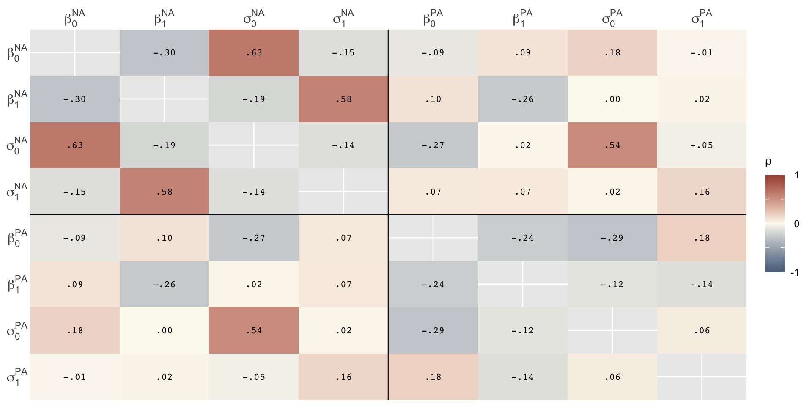